Test Version with JavaScript for Embedded HTML.
This manual requires JavaScript to be enabled to display
correctly, which is the default for all major browsers.
Sam's Educational Michelson Homodyne Interferometer Project Manual V2.1
Assembly and Experiments
Version 2.04 (9-Jan-2022)
Copyright © 1994-2022
Sam Goldwasser
--- All Rights Reserved ---
For contact info, please see the
Sci.Electronics.Repair FAQ
Email Links Page.
Reproduction of this document in whole or in part is permitted
if both of the following conditions are satisfied:
- This notice is included in its entirety at the beginning.
- There is no charge except to cover the costs of copying.
Table of Contents
Preface
Author: Samuel M. Goldwasser
For contact info, please see the
Sci.Electronics.Repair FAQ
Email Links Page.
Copyright © 1994-2020
All Rights Reserved
Reproduction of this document in whole or in part is permitted if both of the
following conditions are satisfied:
1. This notice is included in its entirety at the beginning.
2. There is no charge except to cover the costs of copying.
The information in this document
is intended for use in hobbyist, experimental, research, and other
applications where a bug in the hardware, firmware, or software, will not
have a significant impact on the future of the Universe or anything else.
We will not be responsible for any consequences
of such bugs including but not limited to damage to the $100,000,000
wafer FAB that was purchased on eBay for $1.98 + shipping, financial
loss from the waste of
28 spools of ABS due to the office 3-D printer fabricating a part with
random dimensions due to loss of lock, or bruising to your pet's ego
from any number of causes directly or indirectly related to
the implementation and use of this system. ;-)
The Michelson Interferometer experimental setups V1.0 and V1.5 were
originally developed for Engineering student projects at Swarthmore
College, Pennsylvania.
The only safety issues with the experiments to be performed using this kit
are with respect to the low power Helium-Neon (HeNe) laser. Sure, you could
drop the breadboard on your foot, but that's outside our control. :( :-)
- The first one is with respect to
laser light and your vision. The output power of the laser is
between 0.5 and slightly over 1.0 mW which is less than that of
a typical laser pointer. Nonetheless, one should avoid looking directly
into the beam or specular (shiny) reflections of it. However a
momentary flash will not cause any permanent harm, only perhaps an
afterimage that should go away in a few minutes at most. A 1 mW laser
beam is similar in brightness to that of the noonday Sun. So treat it
like a little red Sun in a cylinder. :)
- The other one is electrical. The laser runs on a High Voltage (HV) low
current power supply. As long as the laser cable is undamaged and securely
attached to the power supply, the HV is safety tucked away inside. However,
if the laser head is unplugged just after being on, there can be an annoying,
though harmless charge retained on the HV connector due the capacitance
of the laser tube, feeling like the shock
from a static buildup when walking across a carpet on a dry day.
But tossing the laser head across the room from a reflex reaction is
bad form (and probably won't help your grade). So just don't touch
the metal prongs for a few minutes, or short between
the prongs with the metal-end of an insulated tool like a screwdriver.
Even though this laser is not likely to cause any harm, one should always
take laser safety seriously. Someday you may be working with one that is
truly dangerous.
Back to Sam's Educational Michelson Homodyne
Interferometer Project Manual Table of Contents.
Abstract
The Michelson interferometer is one of the earliest and simplest
to be developed, but also likely the most widely used configuration
in a variety of applications including metrology (precision measurement).
The type found in most introductory textbooks use single frequency or
unstabilized lasers in what are known as "homodyne" interferometers and
those are the subject of this manual. Another
version uses a special two frequency laser to implement the "heterodyne"
interferometer, which are more likely to be found in high performance
commercial applications like semiconductor wafer foundaries and
are the subject of the companion document:
Sam's Educational Michelson Heterodyne
Interferometer Project Manual V2.1.
An experimental setup is presented which allows for several types of
interferometers to be easily implemented without requiring any special
tools or test equipment. The behavior of various interferometer
configurations will be explored as well as how the characteristics of
the laser impact performance. Various enhancements are also described for
both the laser and detector, as well as extensions to actual
measurements like displacement (change in position) down to nm precision.
The set of parts may be easily duplicated and/or modified for specific
interests.
Back to Sam's Educational Michelson Homodyne Interferometer Project Manual
Table of Contents.
Introduction
IMPORTANT: This manual applies to version 2.1 of Sam's Educational
Michelson Homodyne Interferometer Kit. Here are links to all of
them:
Original versions developed
for a local college.
Sam's Educational Michelson Homodyne
Interferometer Project Manual V2.0: Versions for sale prior to 2022.
Sam's Educational Michelson Homodyne
Interferometer Project Manual V2.1: This manual.
Differences compared to V2.0 are minor. Versions available starting
in 2022.
Sam's Educational Michelson Heterodyne
Interferometer Project Manual V2.1: There is no
V1.x or V2.0. Kits will be available soon.
For the combined kit (heterodyne + homodyne), both of the relevant
manuals will need to be referred to, though there is a lot of overlap.
Detailed information and instructions on using and constructing most of
the sub components of these kits like the various custom PCBs may be found
at Sam's Electronics and Laser Kit Information and
Manuals. There will also be links to them throughout this manual.
Homodyne interferometers employ a laser which nominally produces a single
optical frequency ("laser line") while heterodyne interferometers employ
a laser that generates two closely spaced optical frequencies. They each
have their advantages and drawbacks. Much more on this below.
The photo below shows the Basic version configured for the LI. There are
minor variations in the actual kits depending on version and whether they
are the "Basic", "Deluxe", or "Deluxe+" versions, though this layout
will work for all of them. Differences will be noted below.
Where the total path length and PLD is small, no beam expander is
needed for the laser as in the Basic version. This may result in
a larger signal since the entire beam hits the detector. But the
smaller beam makes it more sensitive to alignment.
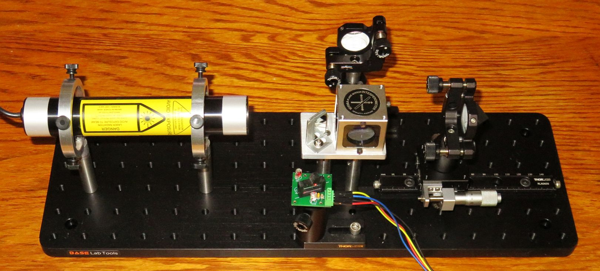
Typical Linear Interferometer Setup with Quadrature
Decoder and µMD0
Interferometers are the key technology is numerous applications in
manufacturing and testing where the very minute wavelength of light
is the "yardstick" providing non-contact measurements down to nanometer
precision. In short, a light source is split into two parts that may
travel different paths and then recombined at some type of detector.
Where the path lengths differ by an integer number of wavelengths, the
result will be constructive interference and the output of the detector
will be high; where it differs by an integer number of wavelengths plus
one half wavelength, the result will be destructive interference and the
output of the detector will be low. In between, the output will vary
sinusoidally. With suitable detectors and electronics, remarkably
precise measurements can be performed. For example, nearly every microchip
manufactured in the explored universe has been done with wafer steppers whose
stages were positioned using interferometry based on HeNe lasers.
While interferometers are employed in a wide array of applications,
the general emphasis for these experiments relate to the use of interferometery
in metrology - precision measuremens of physical characteristics like
displacement, velocity, angle, straightness, and more.
Therefore unlike numerous interferometer experiments that may be found via
a Web search, the emphasis here is on the signals that the setup provides,
not so much on the interference patterns. (Though nothing precludes the
observation of these.
The experimental setups will enable various interferometer configuration
to be easily implemented and then tested with one arm being on a micrometer
linear stage and/or with some other device or material that can vary
the path length precisely.
The light source is a Class II 633 nm
Helium-Neon laser (HeNe for short) with an output power of between 0.4 and
just over 1 mW. The basic detector is a biased photodiode connected to
a dual channel digital oscilloscope. Variations and enhancements to these
will be offered as options.
Among the areas that can be explored with the Basic setups are:
- Techniques for aligning the interferometer.
- Impact on performance of the coherence length of the laser source.
- Inserting optics in one of the beam paths.
- Using the interferometer as a pressure and/or temperature sensor.
There is no need to construct all of the interferometer
configurations described below. Doing the Linear Interferometer (LI)
first makes sense
since there are detailed instructions on its construction, alignment, testing.
Building the High Stability Plane Mirror Interferometer (HSPMI)
would be the logical next step moving from cube corners
to plane mirrors. It also permits the loudspeaker and/or PZT actuators
to be added. Then after that one of the others. Perhaps coordinate with
the other project students using this same kit so that each of
you do different ones.
This minimal set of experiments can all be done using parts in the Basic Kit:
- Construction of Linear Interferometer (LI).
- Evaluating and explaining fringe response for various path length
differences with respect to lasing modes.
- Interferometer as air pressure or index of refraction of air sensor.
- Interferometer as temperature sensor.
- Construction of Quad-Sin-Cos detector for displacement measurements.
- Homodyne measurement display using µMD0.
The following additional projects can be done using parts in the Deluxe kit:
- Construction and testing of other types of interferometers including the
PMI, HSPMI, and SBI.
- Construction of Original Michelson Interferometer (BMI) and comparison
with the LI.
- Resolution of the various interferometer configurations.
- Sensitivity to alignment based on configuration.
- PZT actuator for sub-wavelength-scale movement.
- Loudspeaker actuator for wavelength scale movement and "interferometer
microphone".
- Interferometer as earthquake and/or vibration detector.
- Analysis of interferometer behavior as a function of the laser modes.
The following are more advanced projects, but they
may require additional parts and/or different parts including the laser
that are not included in the either kit:
- Interferometer as gas partial pressure sensor.
- Substitution of random polarized HeNe laser for the linearly polarized
laser.
- Construction of the laser itself using a bare laser tube, power supply,
and mounts.
- Stabilizing the laser for single frequency operation using analog
circuits or µSLC1.
- Implementation of stabilized two frequency Zeeman HeNe laser. (Requires
suitable random polarized laser.)
- Heterodyne measurement display using µMD1 or µMD2.
There is some information on these in this manual and links will be
provided to learn more.
As of Winter 2022, there are 3 versions of the setups. Around 5 each of
V1.0 and V1.5 (which differ in minor details) have been built and are
being used for in-person and remote project labs at a local college;
V2.1 is the one for sale going forward and comes in several flavors.
The detailed asseembly instructions in this manual are for V2.1.
Various configurations of V2.1 are or will be available on eBay under my
user ID siliconsam or by searching for "Sam's Educational Michelson
Interferometer Interferometer
Experimental Setups for Education-Signal Oriented". Or directly from
me with more options and slightly lower cost. If interested, contact me
via Sci.Electronics.Repair
FAQ Email Links Page.
Some of the photos here are of the original prototype on a custom aluminum
optical breadboard. They are only for reference (and because I'm too lazy
to reshoot them!).
Note: Off-page links (including any clickable graphics)
open in a single new window or tab depending on
your browser's settings. A suitable fixed width or monospace font like
"Courier New" must be specified in your browser to make sense of the
simple ASCII diagrams. For Firefox, go to: "Settings", "General", "Fonts",
"Advanced", "Monospace", and confirm that it is "Default (Courier New)".
Back to Sam's Educational Michelson Homodyne Interferometer Project Manual
Table of Contents.
Interferometers for Metrology Applications
Back to Sam's Educational Michelson Homodyne Interferometer Project Manual
Table of Contents.
Detectors - Optical to Electrical Conversion
With the emphasis on the signal behavior of interferometers, the conversion
from light to electrical is critical - but very simple to implement.
To be able to view or do anything with the output of the interferometer
requires some means of converting light to an electrical signal.
The type of detector use here is called a "biased photodiode" and is
essentially a current source with an output proportional to incident
optical power.
A silicon photodiode (PD) when reverse biased
by a positive DC voltage (battery or power supply) allows a current
(designated Ipd) to flow with a sensitivity measured in amps / watt (A/W) or
for our purposes, mA/mW of incident laser power. The sensitivity for
silicon at 633 nm is typically between 0.3 and 0.4 mA/mW and linear
up to several mW for the types of PDs used here. This relationship
holds even when a load resistor R-Load is installed between the PD
and circuit common (negative of the bias supply),
resulting in an output voltage that is linear with respect to
incident laser power based on Ipd * R-Load.
For example, with a laser power of 0.5 mW, a PD sensitivity of 0.35 mA/mW,
and R-Load of 10K ohms, Vo would be 1.75 V.
The most basic circuit is shown below:
Silicon
Photodiode
+---------|<|-------+-------o Output to scope or DMM
| Cathode Anode |
| /
| \ R-Load
| /
| Bias Supply \
| +| | - |
+--------||||-------+-------o GND / Common / Return
| |
Note the polarity of the PD with its cathode connected to the positive of the
power supply and thus reverse biased. With no light incident on the PD,
only the so-called "dark current" will flow, which is generally small enough
to be ignored (nanoamps or less). Actual usable detectors are almost
identical to this simple circuit.
Here is a widely used commercial biased photodiode detector and a version
used in the kits:
- Thorlabs DET110: This is typical of a commercial biased detector
without amplification. More information may be found at
Thorlabs DET110 Spec Sheet.
R-Protect PD BNC Center
+-------/\/\----------+----|<|------<<-----------------+------o Scope or DMM
| 1K | +-<<-------------+ |
o | | BNC Shield | /
\ Power _|_ C-Bypass | | \ R-Load
o --- | | /
| 12 V Battery | | | \
| +| |- | | | |
+---------||||--------+-----------+ +---+------o GND
| |
|<--------- Thorlabs DET110 -------->|<---- Output Wiring ---->
R-Protect limits current should the battery be installed backwards
or should the PD fail shorted. C-Bypass improves the high frequency
response by eliminating the other components from the AC signal path.
The DET110 mounts on a standard post using an 8-32 setscrew. Threads
on the front allow accessories to be easily attached.
The primary advantage of a detector like the DET110 is that it is in a
nice shielded case with a BNC coax connector.
- Custom single channel detector: For the purposes of these kits, a
much lower cost approach will have similar performance and more flexibility,
being easily extended to two channels for the Quad-Sin-Cos decoder. And it
will be educationally more rewarding. ;-) The circuit
is virtually identical to that of the DET110:
R-Protect PD Yellow
+-----/\/\-------|<|----<<----------------------+---------o Scope Channel 1
| |
| /
| \ R-Load
| /
| DC Power \
| Red +| |- Black |
+-----------------------<<---------||||---------+---------o Scope Ground
| |
|<--- SBB or QDx PCB --->|<---- Scope / Power Wiring ---->
PD Pins: Facing Front of PD with Legs Down: Anode on left, Cathode on right.
R-Protect: 250-1K ohms typical. R-Load: 10K-1M ohms typical.
DC power comes from either a wall adapter or USB +5 V, so no power switch is
needed. And for the low signal bandwidth here, no C-Bypass is shown, though
there is a spot on the detector PCBs for one.
Initial construction is most easily done using a small Solderless BreadBoard
(SBB). This has 17 columns of two sets of 5 bussed holes. Short #20 to #24
AWG wires are used as jumpers where the busses aren't convenient. The SBB
has a double-sided sticky pad on the bottom which enables it to be attached
to a standard post using the "Detector adapter plate" and
an 8-32 setscrew. A couple of small detector PCBs that mount directly
on Thorlabs posts are also included. These accomodate either 1 or 2 PD
chennels.
For the single channel detector, only two wires need to attach to the SBB:
+DC power and the signal output. The load resistor can be external, or on
the SBB with an additional wire to scope GND and -DC. The wire colors are
suggestions, the electrons won't care. ;-)
Testing of either detector can be done using the laser or even a
flashlight to confirm sensitivity to light. However, even a super-bright
flashlight will likely result in only a small signal compared to the laser.
These only use the custom detector. It would be silly, space consuming -
and expensive - to require two DET110s! So, for two channels, all parts
except for the power source and protection resistor are replicated:
R-Protect PD1 Yellow
+-----/\/\----+--|<|---<<-----------------------+----------o Scope Channel 1
| | |
| | PD2 Blue |
| +--|<|---<<---------------------------+------o Scope Channel 2
| | |
| / /
| R-Load1 \ \ R-Load2
| / /
| DC Power \ \
| Red +| |- Black | |
+-----------------------<<---------||||---------+---+------o Scope Ground
| |
|<--- SBB or QDx PCB --->|<----- Scope / Power Wiring ------>
PD Pins: Facing Front of PD with Legs Down: Anode on left, Cathode on right.
R-Protect: 250-1K ohms typical. R-Load: 10K-1M ohms typical.
The same PCBs may be used for this circuit.
What is done with the light before it hits the photodiodes is the interesting
part, which will be described where relevant. ;-)
The problem with the simple circuits above is that there is no
amplification. So to achieve both a usable signal level and reasonable
bandwidth is not possible. By using a load resistor with a high enough value,
it the signal level will be acceptable but then the badnwidth may
as low as a few kHz. While this is satisfactory for initial testing and
many of the experiments, greater bandwidth will eventually be desired
for the displacement readout.
The purpose of the Quad-A-B Preamp (henceforth referred to as QAB2 or simply
AB2) is to provide a simple solution that accepts photodiode
inputs and generates differential RS422 A and B signals that can be input
to µMD0, µMD1, µMD2, or another compatible displacement
measuring system.
QAB2 is on a 1.6 inch by 2.25 inch PCB and runs on 12 to 15 VDC. (The PCB
itself is called SG-AB2.)
The optical input is a beam up to ~3 mm in diameter (using the default
photodiode) with an optical power from <25 µW to >1 mW.
QAB2 has >3 MHz bandwidth (full cycle) which is more than adequate for
systems using the kit lasers as well as for many real applications.
With a Linear Interferometer which has a full
cycle of ~316 nm, the slew rate can be greater than 1 meter per second,
which is a fairly nutty velocity. ;-). And it is expected
that the bandwidth limit can be extended with trivial changes to only a few
part values. This is left as an exercise for the student. ;-)

Populated AB2 V1.00 PCB
Although shown with photodiodes plugged into the PCB, in actual use, they
would probably be on the detector PCB with short twisted wire cables to
connect them to the SG-AB2 PCB.
Parts to construct AB2 will eventually be included as part of the homodyne
setups. More information on AB2 including complete "Heathkit™-style"
assembly instructions may be found at Quad-A-B
Preamp 2 (QAB2) Assembly and Operation Manual.
Back to Sam's Educational Michelson Homodyne Interferometer Project Manual
Table of Contents.
Linear Interferometer
Although HP called the combination of the PBSC and reference CC attached to
it, the "Linear Interferometer", the term "LI" here will refer to the entire
setup. And to enable the PLD to be set to zero, the CC normally attached
directly to the PBSC will be mounted a few inches away.
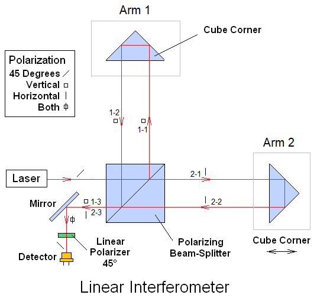
The designations m-n show the paths taken by the Arm 1 and Arm 2 beams where
"m" is the Arm and "n" is the sequence number.
The diagram below shows the general arrangement of the laser, beam splitter,
cube corners, and detector.
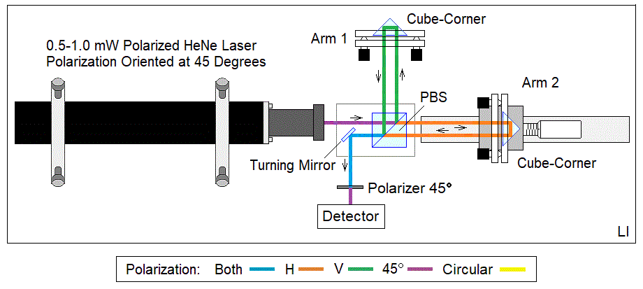
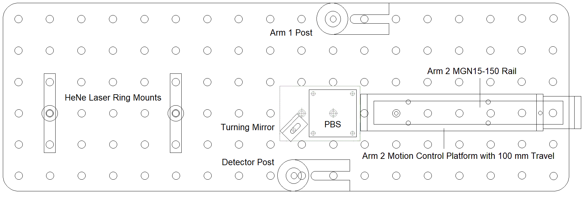
Linear Interferometer Diagram and Suggested Breadboard
Layout
The other configurations will have a few additional or substitute parts and
small variations in the horizonatal position of the laser
and placement of the detector but are otherwise similar.
Therefore the LI setup will be described in more detail.
- Baseplate: This is a 6x18x0.5 inch aluminum optical
"breadboard" with an array of 108 1/4-20 tapped holes on one inch
centers to which all the components are attached with cap-head screws
or set-screws. (We may use the terms "baseplate" and "breadboard"
interchangeably.)
- HeNe laser: This is a ~1.25" cylindrical laser "head"
mounted within a pair of aluminum rings each with 4 screws to allow
for its position and alignment to be easily adjusted. A separate high
voltage power supply which plugs into the AC line drives the laser tube
safely enclosed in the aluminum cylinder. The laser is of very high quality
from JDS Uniphase or Melles Griot. It is the only somewhat fragile item
so please don't drop it or use it to hammer nails. Your instructor (and I),
and perhaps your grades won't like that. :( :)
The photo shows a laser without a beam expander but the laser in the kit
will either come with a beam expander already attached to convert the
~0.5 mm beam from the laser tube into a ~4 mm beam with low divergence,
or the expander which can be attached and centered with 3 screws.
The raw beam
is a bit trickier to align and to maintain alignment as the stage in Arm 2
is moved, but it is quite adequate for a small range of PLD.
But where the PLD is large (e.g., for use as an earthquake sensor),
the beam expander eases the alignment and
is required so that the divergence of the beam doesn't affect the
detector response (e.g., the fringe contrast). Since the beam expander
is secured by 3 screws (see below) it can be removed to explore how the
raw beam behaves. However, two cautions: (1) Do NOT remove the plastic
bezel of the laser head as that will expose the high voltage connected
to the laser tube and (2) careful lateral adjustment of the beam expander
will be required when reattached to center the beam.
If using the beam expander, the posts/rings for the laser should probably
be mounted one hole to the left of where they are in the photo to
provide more clearance.
- Installing the optional beam expander: The black beam expander
itself attaches to the "Beam Expander Adapter" which is a circular plate
around 1-1/4". The threaded end of the beam expander will need to be glued
to the adapter ring unless it is a tight enough fit to stay in place.
If too loose, use a small amount of 5-Minute Epoxy attach it. Make sure it
is centered and straight.
Once cured (give it 15 minutes to be safe), it attached to the front of
the laesr head using three M2.5 capscrews, which may already be installed.
If not, they will be in one of the hardware bags or with the beam expander
or adapter ring. The holes in the adapter ring are large enough so that
there is (hopefully) enough adjustment range to center the beam, which must
be done "live" - with the laser powered. Thread the M2.5 screws in just
snug and adjust the centering until the beam is nice and round - this
can also be confirmed by looked at the scatter off the front lens of the
beam expander and centering there. Then tighten the screws just enough
so it won't move around but it is metal in plastic so overtightening may
strip the threads.
- The heart of the setup is an assembly using optical
components from Hewlett Packard (HP), Agilent, or Keysight. These may
be configured in a variety of ways to create several types of
interferometers:
- HP/Agilent 10702A or 10706A Polarizing Beam Splitter Cube (PBSC).
(The two part numbers are physically and functionally identical except for
the label.) It is a high quality 1 inch PBSC
mounted in a precision stainless steel frame.
- HP/Agilent 10703A Cube Corner (CC) retro-reflector. This
is a glass trihedral prism installed in a stainless steel cylidrical case.
It can be attached directly to the PBSC. Not in basic kit.
- A pair of HP/Agilent 10722A or equivalent Quarter WavePlates
(QWPs) can also be attached to the PBSC. Not in basic kit.
As a point of interest (or trivia), these parts cost
something like $4,000 if purchased new. Fortunately for us,
eBay is much less expensive. :-)
This assembly attaches to an aluminum "PBS Mount Adapter Plate" which itself
secured to the breadboard with optical posts and spacers.
- Two unmounted glass cube corner retro reflector
trihedral prisms: These can be secured in the
one inch Thorlabs KM100 kinematic mirror mounts with the KM100s rotated
180 degrees so the knobs face the PBSC.
For some of the other interferometer configurations, these will be replaced
either with 1" planar mirrors installed in the KM100s, or with a thinner
mirror glued to a loudspeaker or PZT. (More on these later.)
- The turning mirror: is simply a small rectangular high
quality planar first surface aluminized mirror that redirects the
output beam to the detector if needed. The exit direction of the
beam depends on the specific interferometer configuration but most
of them direct the output to the left so to get it to the detector
requires a right angle reflection.
- The single channel detector shown in the photo
is a Thorlabs DET110 biased photodiode which generates
a current proportional to the amount of light (i.e., optical power).
It's in a nice shielded case feeding a nice shielded BNC cable
for the output and has its own own battery. It also costs a fortune. ;-)
At 633 nm, the relationship is approximately 0.3 mA / mW of laser power.
An external load resistor sets the sensitivity in terms of V/mW. For
example, with a 10K ohm load resistor, the effective
sensitivity is approximately 3 V / mW. Other commercial
detectors may be substituted for the DET110. But parts are
included in the kit to construct a detector that will serve
the same purpose with essentially the same performance (for
our needs) and can be modified for two channels to
generate both amplitdue and position signals (Quad-Sin-Cos)
outputs for displacement measurements. It just doesn't look
as cool unless perhaps you choose to install it in a
3-D-printed case. :)
Going forward, only parts for this home-built single or two channel
detector will be included in the kits. At the very least, building the
thing is more educational. ;-)
- There are either one or two types of Polarizers:
- All kits include one or more pieces of Circular Polarizer (CP) which is
a Linear Polarizer (LP) combined with a Quarter WavePlate (QWP). The LP
axis is at 45 degrees to the sides.
- Some kits also include a square piece of Linear Polarizer (LP) sheet
with its polarization axis lined up with one of the sides.
The CP type can be used for most purposes in place of an LP. Specifically
here for placing in front of the detector and/or photodiodes. And if using
a random polarized HeNe laser, the CP can be used to force it to be
linearly polarized with the circular polarized output sent to the PBSC,
which works fine. That's why some kits may not have an LP at all. But
where an LP is present, it will probably be larger since the LP is used
for most experiments. Only a very small piece of CP is required for the
Quadrature Detector. For everything else, the LP is simpler to deal with
since which side is the input doesn't matter.
Do NOT remove the protective film until ready to use. Also note that the
CP sheet has a weak adhesive on the QWP surface and it will attract dust and
debris (including grubby fingerprints!) Cleaning can be done with
isopropyl alcohol but the adhesive will still be there when it evaporates.
Only small pieces of these are required for any given purpose so they can be
cut as desired. Four or 9 equal pieces of each is probably a decent choice.
Use masking tape to stick them whever they need to be stuck to. ;-)
A variety of mounting schemes are used:
- Laser: As noted above, the laser head cylinder is secured in a
pair of 4-screw adjustable ring mounts so that it can be moved horizontally
and vertically, and have its alignment fine tuned. For the interferometers,
it will need to be positioned at a height of 4-1/4 inches above
the baseplate and either centered or offset approximately 1/4 inch toward
the back of the setup (as shown above) depending on the specific
interferometer being implemented.
- PBSC assembly and turning mirror: The mount for this is the
"PBS Mount Adapter Plate" attached to a pair of 3 inch Thorlabs posts with
1/4" spacers. This replaces the funky wood block in the really early
versions of these kits. ;-)
- Interferometer Arm 1: This would normally be the "Reference Arm"
in the basic Linear Interferometer. A Cube corner (CC) or one inch
first surface mirror is installed in a one inch Thorlabs
KM100 adjustable mount on a post in a post holder which allows for height and
rotation about the vertical axis, and also fine adjustment pan and tilt
of the CC itself via the knobs on the KM100.
- Interferometer Arm 2: This is what the "Tool" of a displacement
measureing system (for example) would mount on. It has a similar KM100 for a
mirror or CC, but mounted on a micrometer controlled linear stage so that its
position can be adjusted very precisely. A loudspeaker with a mirror
glued to its cone to be used as an electrically driven actuator or as
a laser microphone can also be installed in the KM100.
- Custom detector: For the kits, this is a small solderless
breadboard (though a prototyping board or even a custom PCB may be
used instead). For the single channel version, a photodiode and its
protection resistor to the bisa supply are installed, along with an LP (or CP
used as an LP) at 45 degrees in front of the PD. For the
interferometer setup, the performance is more than adequate and
indistinguishable from the DET110. And the ~100:1
cost advantage :) makes it likely to be the default going forward.
This same platform will also be used for the quadrature decoder.
The following diagram shows the relationships of the various mounts
for setting the heights during assembly. This diagram applies to all
V2.1 setups. 4-1/4" places the laser in the center of the PBS vertically:
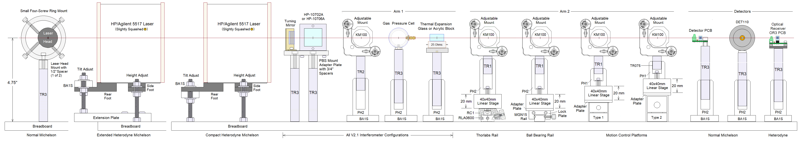
Required Optical Components and their Suggested Heights.
The heights of any Retro-Reflectors (RRs) in the setup will be
what most affect the beam height. This is true of the Linear
Interferometer (LI). Where there is an RR attached to the PBS
cube like the Plane Mirror Interferometer (PMI), the alignment
of the laser will need to be used. However, there is a wide
tolerance and enough degrees of freedom so in the end, it
should not really be much of a problem to set it up.
Here is an annotated photo of the Deluxe version configured for the HSPMI:

Deluxe Version Configured for the High Stability Plane Mirror Interferometer with µMD0
The Deluxe+ version would be similar except for the larger breadboard
and longer rail; The Basic version does not include the beam expander,
mounted CC, QWPs, or planar mirrors.
The following procedure may be used to install each of the parts and then
get to the point of "first signal" using the oscilloscope. The procedure for
the other interferometers will be virtually identical in most respects, but
may be trickier depending on the type.
It is assumed that nothing has been mounted, but depending on the previous use,
some of these steps have already been completed. Refer to the layout
diagrams, above, parts locations that are known to work.
Parts attached with fasteners should be snug but don't overtighten.
It is also assumed that the laser is linearly polarized. Slight
changes are required if it is random polarized.
- Laser mount posts: Attach two 3 inch posts to the breadboard
using 1/4-20 set screws.
If the laser head has a beam expander, or it is anticipated that one will
be added later, it is recommended that the posts be mounts 1 hole to the
left of where the are in the photo.
Note: To assure that there are ample threads engaged in both parts
here and in subsequent steps with set-screws,
the set-screw should be installed approximately half-way
into the baseplate or mounting plate and then a thin tool or
even the edge of a metal plate or stiff cardboard can be used to keep
the set-screw from turning as the post or post holder is threaded onto it
before tightening.
- Laser mount rings: Secure through to the
top of the posts with 8-32 1/2 inch cap-head screws. If the mounting hole
in the rings is threaded, there should be plastic washers to go between
the rings and the spacers to provide compliance so the rings can be
tightened with the correct alignment.
- Laser head: These steps secure and align the laser head cylinder.
- As a quick test, place a linear polarizer (LP or LP/CP with the
non-adhesive side facing the beam) with the polarization axis at 45
degrees in the combined return beam. If the alignment is close, very slight
rotation of the linear stage micrometer should result in the intensity
varying dramatically. Further fine tuning of the alignment may be required
to maximize the variation and uniformaty of the fring pattern. The
optimal alignment will be where it goes almost totally dark to light.
Of course, much more more can be done using
these simple observations including effects of alignment, expansion using
a lens, display using a Webcam, etc.
Set up the oscilloscope: (If using a USB scope, this assumes that
the required software and device drivers have already been installed on your
PC or MAC.) For input, use one of the scope probes on the 1X setting
(there is a slide switch on its body).
Single Channel Detector: These steps assemble the components of the
fringe detector. Parts for the home-built (custom) detector are normally
provided in the kits but a DET110 may be available as an option.
- Attach a BA1S Holddown to a 2 inch post holder with a 1/4-20 3/8 inch
cap-head screw.
- Install a 2 inch post into the post holder with the small (8-32) tapped
hole at the top with the lock screw just snug.
- Clamp the assembly down loosely with a 1/4-20 1/2 inch cap-head screw.
- Custom detector: Install a photodiode, 1K ohm resistor, and
male-male jumper wires to the solderless breadboard or detector PCB
based on the circuis in the section: Single Channel
Detectors and mount it on the post.
- Thorlabs DET110: Mount the DET110 on the post and attach a BNC cable
for the signal.
- install a 10K ohm resistor for R-Load. 10K is probably an
acceptable value but depending on laser power and alignment, a higher
(most likely) or lower resistance may be desirable. R-Load can be
located at the detector or scope, whichever is more convenient.
- Tape or place a piece of LP or LP/CP to the front of the sensor with its
polarizaiton axis at 45 degrees (edges at 0/90 degrees). If using the CP,
remove the protective film from both sides. The sticky side can be stuck
directly to the DET110 or PD when used as an LP.
- Apply power to the home-built detector from the 12 VDC adapter or
switch on the DET110.
Adjust the position of the detector so that the combined return beams are
centered on the active area of the sensor.
If alignment is close, the amplitude of the signal on the scope should
vary dramatically as the micrometer is rotated by the smallest amount -
(or from just touching the breadboard or anything on it)!
The wavelengths of light are TINY! Each full cycle is 1/2 wavelength or
around 316.5 nm. The micrometer moves the stage by 0.5 mm per full
rotation, or around 1,389 nm/degree.
The amplitude can be maximized using the knobs on the Arm 1 and Arm 2
adjustable mounts. The signal amplitude may vary slightly (up to ~20
percent) in a periodic cycle over a time scale of seconds to minutes
in addition to it probably increasing slightly as the laser warms up.
The time scale will depend on how long the HeNe has been on. Why?
There can be several causes.
And for those new to interferometers, to reiterate,
the optimal alignment will also be
where the signal instability is maximized. ;-) Almost ANYTHING will
affect it from touching the apparatus or table on which it is on,
to just walking across the floor. The wavelength of light is really
really small. ;-) To put this in
some perspective, a full cycle of the signal with the Linear Interfemeter
is a change in PLD of 316.4 µm (1/2 wavelength of 632.8 nm or
1/3,160th of a mm). That's about 1/158th the
diameter of an average human hair (~50 µm) or 1/22th the diameter
of a human red blood cell (7 µm). Street traffic will be detectable,
as will drafts from the A/C, changes in temperature, and siesmic
events. Some of these effects can be further explored using parts in
these kits.
Now you're set to explore all sorts of exciting aspects of
interferometry. ;-)
Back to Sam's Educational Michelson Homodyne Interferometer Project Manual
Table of Contents.
Observing the Effects of PLD on Fringe Contrast
The tests above were done with the PLD near 0. What happens otherwise?
If the laser operated with a Single Longidudinal Mode (SLM), the PLD
would not matter up to a very large number in the 100s of meters or more.
(Such lasers are also called "single frequency".) However, the
laser used here is NOT SLM but has 1 or 2 modes depending on its
cavity length, which
changes due to thermal expansion during warmup as the modes sweep through
the neon gain curve. (There is much more on this in the section:
Linear polarized versus random polarized laser.)
For the first of the following tests,
the lasing modes must all have the same polarization.
And the (single pass) Linear Interferometer should be used.
- For a linearly polarized laser (most commonly used here), the polarization
axis (indicated by the alignment line near the front) should be
oriented at 45 degrees. What will be the effect if it is at +45 degrees
or -45 degrees?
- If your laser is random polarized, it should
be oriented so the two outer lines near the front are aligned horizontally
and vertically. A CP should be mounted in the beam
with its LP side facing the laser
and its polarization axis at 45 degrees. If the CP is stuck to a
microscope cover slip, this means the LP (shiny) side of the sandwich is
facing the laser and the cover slip is out. *Gently* tape it in place,
cover slips are fragile. While the resulting beam is actually circularly
polarized (why?), the effect will be similar to that of a linearly
polarized beam at 45 degrees.
For all these tests, it will be better to shut off the laser for a few minutes
before starting. Then when it is turned on, the mode sweep due to cavity
expansion will be fastest.
- Check behavior with the PLD set as close to 0 as possible by
measurements of the distance from the PBSC to the CCs in each arm.
±1 mm will be acceptable. Monitor the
behavior of the detected signal over time by twiddling the micrometer
periodically over a few minutes. Note any significant change in
signal amplitude. A change of 10 or 15 percent can be attributable to
the normal variation in total power during mode sweep and warmup, but anything
more will be due to the interferometer.
The cavity length of the tube in the 1107 and 1108 lasers is
around 137.6 mm or 5.417 inches. One half of this is 68.8 mm
or 2.7085 inches.
- Change the location of the mirror in Arm 2 so the PLD is within
±1 mm of one half the cavity length by relocating the stage
and/or adjusting its position using the micrometer.
Now observe the fringe signal again and describe what you see
over the course of a few minutes. (Turn off the laser again and
allow it to cool for a few minutes as above.) Check alignment to
confirm that a change in alignment is not the cause of the effects
being seen.
- Try intermediate locations for the Arm 2 mirror.
- If the Arm 1 adjustable mount is positioned as close as possible to the
PBS cube using the BA1S holddown, it will be possible to achieve a PLD of at
least the tube cavity length. See how the signal amplitude there compares
with the one with a PLD of 0. If it's noticeably lower, why might that be?
There are several factors involved.
Now explain the behevior in each case. And what are special about a PLD of
zero and one half the cavity length?
How might these results differ if the HSPMI were used instead of the LI?
If your laser is random polarized, it is possible to perform the following
additional tests with the CP removed from the front of the laser:
- Repeat the above tests with the laser oriented so the outer lines are
aligned with the horizontal and vertical axes.
- Repeat with the lines on the laser oriented at ±45 degrees.
Explain your results with respect to the longitudinal mode behavior.
What would happen if the PLD could be extended to more than the cavity length
of the laser as would be possible with the 12 inch rail in Deluxe+ kit?
All of these tests can also be done with the other interferometer
configurations. Predict how the results would change, if at all.
What about the HRPMI?
Back to Sam's Educational Michelson Homodyne Interferometer Project Manual
Table of Contents.
High Stability Plane Mirror Interferometer (HSPMI)
The basic Plane Mirror Interferometer (PMI) as its name implies uses a
plane mirror instead of a cube corner for the remote reflector. It has
a double pass architecture which halves the distance for a full fringe
cycle at the detector for a movement of the reflector in
Arm 2 (called the "measurement arm"). However, it is not
desirable to use a PMI here because it
is double-pass only for Arm 2 but single pass for Arm 1. Thus
while the PLD can be set to zero, the spacings or lengths of the
two arms (as well as the change in displacement) are not the same,
which at the very least is confusing. (More on this in the section
on the PMI.)
The HSPMI on the other hand is perfectly symmetric: The beam paths for both
Arms 1 and 2 are double pass and go through the CC. However, the change
in PLD is double the change in position of the mirror in either arm. Thus
it could also be used as a differential HSPMI where the relative displacement
of Arms 1 and 2 is to be measured.
Normally, the Arm 1 mirror would be mounted along with the QWP on the PBSC
as the reference since absolute PLD doesn't matter with the single
frequency or two frequency lasers used in metrology applications.
But as with the LI, we need the PLD to be close to zero or ohter specific
value for experiments using a multi-longitudinal mode laser. (The "other
specific value" would normally be a small integer multiple of the laser's
internal cavity length. Why?)
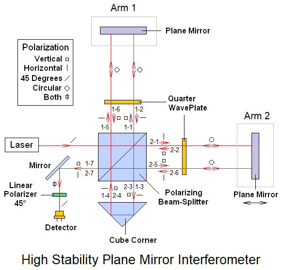
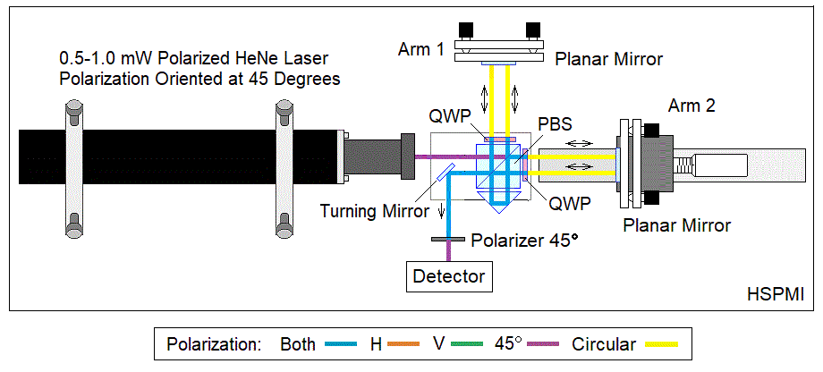
As with the LI, above, the designations m-n show the paths taken by the
Arm 1 and Arm 2 beams where "m" is the Arm and "n" is the sequence number.
Assuming the LI was already built, not many changes/additions are required:
- Install the HP retro-reflector (10703A) on the PBSC face closest to the
detector. The orientation should be such that the beam doesn't hit an apex.
This usually means the serial number (if present) runs up and down.
- Install QWPs (HP 10722A or unmarked) on the faces toward the Arms. Their
orientation does not matter as long as the screw slots are used.
- Replace the unmounted cube corner retro-reflectors with circular
1" planar mirrors. The mirror mounts can be rotated 180 degrees to make
them easier to adjust.
Adjust the location of the Arm 2 planar mirror so that the PLD is close
to zero. Since the Arm 1 and Arm 2 beam paths are identical,
distances from the mirrors to the faces of the PBSC block can be used.
Alignment will be similar to that for the LI, differ in some respects
due to the planar mirrors and double pass architecture:
- Adjustment will be more finicky. This includes setup at a PLD of
0 as well as with respect to changes in PLD. While grabbing and
manipulating the entire mirror mounts may be acceptable for the LI,
the knobs should probably be used for the HSPMI. Why?
- The signal level will be lower by as much as a factor of 2 or more.
Trace the beam paths and compare them to those of the LI.
- How will the fringes frequency change?
Back to Sam's Educational Michelson Homodyne Interferometer Project Manual
Table of Contents.
Back to Sam's Educational Michelson Homodyne Interferometer Project Manual
Table of Contents.
Other Interferometer Configurations
There are some other variations on the Michelson interferometer that may
be put together using parts in this kit, starting with the original form
of the Michelson Interferometer.
This is identical to the original except that it uses the polarized laser
and PBS cube as the beam-splitter. But note that the PBS passes and reflects
the X (parallel to the baseplate) and Y (orthogonal to the baseplate)
polarized components and they retrace their steps on the return
journey. Thus a Non-Polarizing Beam-Splitter (NPBS) must be inserted to pick
off both of them before passing through the linear polarizer at 45 degrees
to combine them for the detector.
The NPBS can be the variable Attenuator Plate (AP) that is part of the
quadrature decoder, but mounting it and determination of the optimal
attenuation is left as an exercise for the student.
Without the cube corners and/or QWPs to separate the outgoing and return
beams, everything will be jumbled together and there will be back-reflections
directly to the laser. This won't cause damage but there could be serious
instability in the resulting behavior. However, with a polarized HeNe, the
effects may not be detectable either visually or even in the fringe signal.
But for a random polarized laser, the result would be mode polarization
switching, which could reak havoc with the signal.
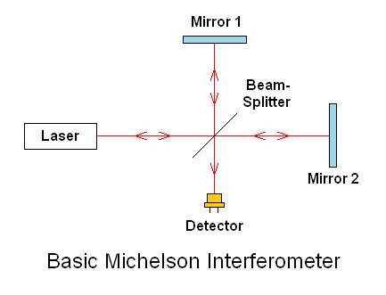
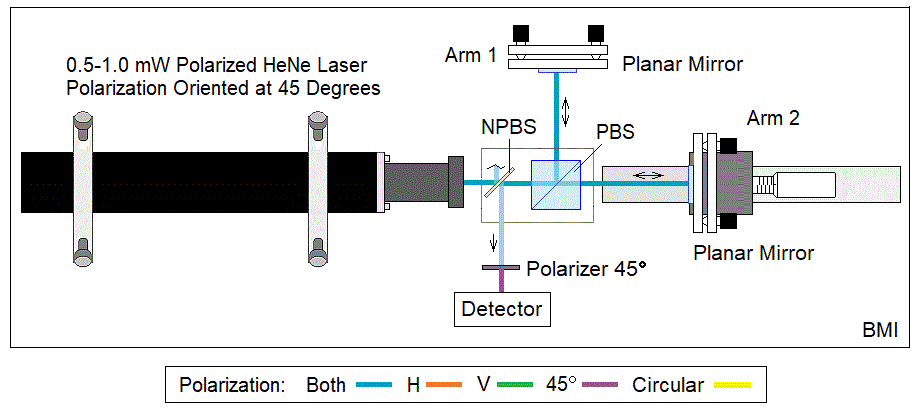
The NRRPMI minimizes the required
size of the optical components but with no retro-reflector,
will require very precise in
alignment during setup to maintain a usable signal with any significant
movement. It is most similar to the original Michelson interferometer but
the addition of the QWPs avoids (most) back-reflections to the laser.
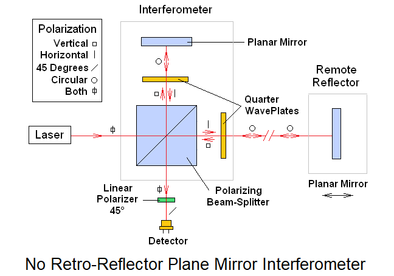
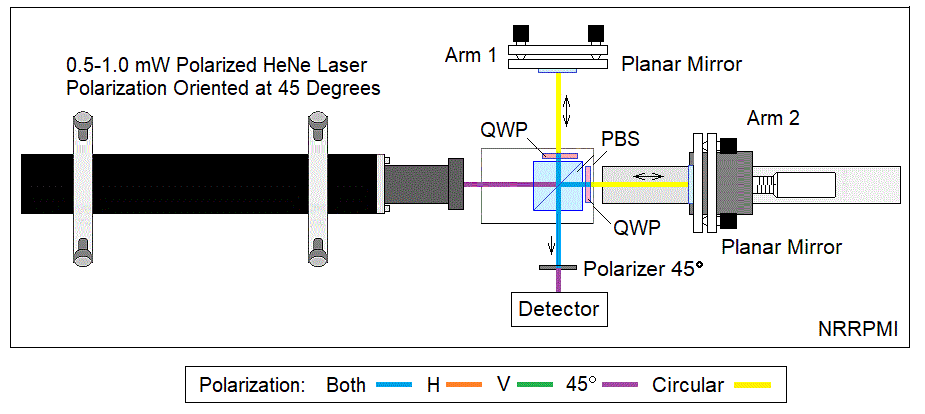
The PMI is probably the most common of the interferometers that use a planar
mirror.
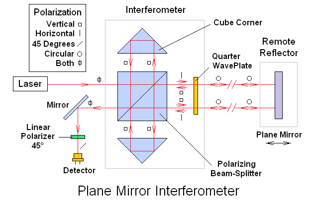
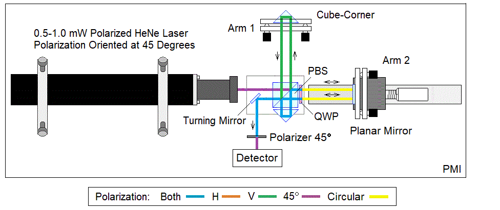
However, it is asymmetric in terms of the beam paths. The reference (Arm 1)
is single pass while the measurement (Arm 2) is double pass. To achieve a
PLD close to 0 - required for the non-single mode laser - the positions of
the two reflectors must differ significantly.
Note how close the mirror on the stage is to the PBSC in the diagram - and
that may not even be close enough for the paths to be equal!
For this reason, while the PMI is widely used, the HSPMI is recommended as the
one to be built after the LI.
This is commonly used where space is tight since it doesn't require two
offset beams. Normally, much smaller PBSC and CCs could and would be used.
As with the NRRPMI, above, the use of the QWPs avoids most back-reflections
to the laser.
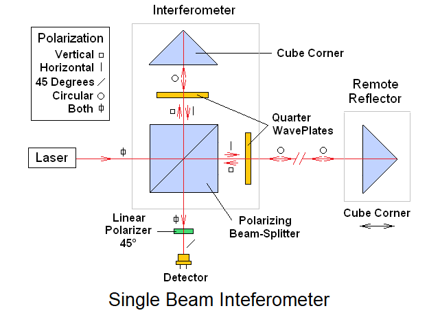
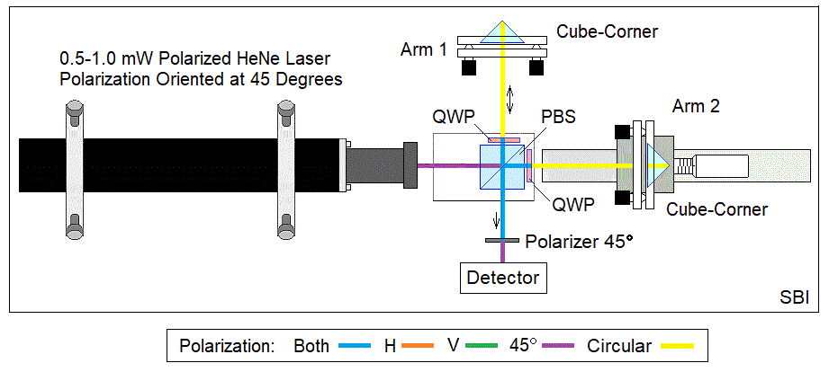
The MLI adds a pair of QWPs to direct the beam to the detector out the side
of the PBSC and is achitecturally similar to the SBI but with offset beam
paths that have two additional advantages: (1) retro-reflections back to
the laser are reduced further and (2) the beams don't hit the apex or
edges of the cube corner trihedral prisms. However, only under very
specific cercumstances would the additional cost of the QWPs likely
be justified.
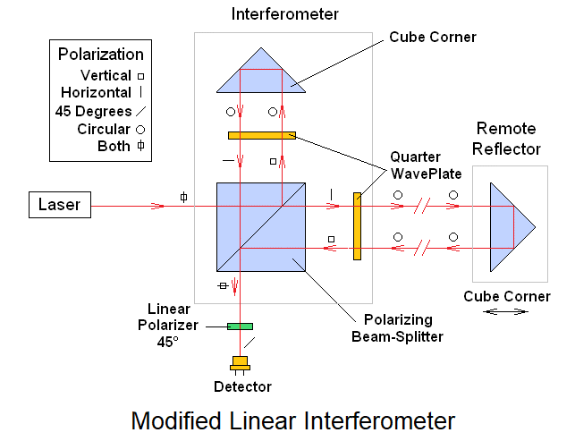
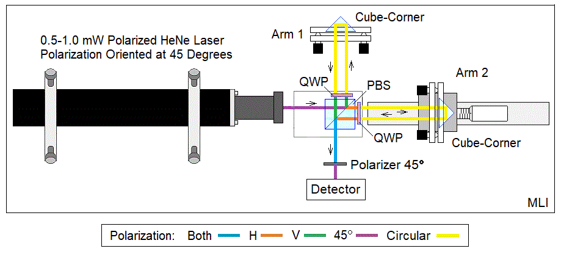
The remote reflector is a cube corner which is better for long distances
yet it has double the resolution of the normal LI, the same as the PMI.
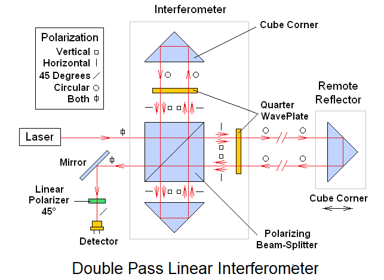
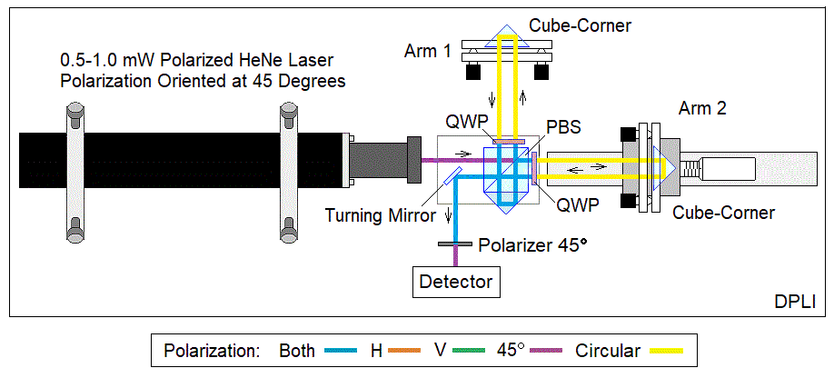
The signal level may be even lower than with the PMI since the CCs are
slightly lossier than planar mirrors. A single pass
through the silver coated CCs is ~86% resulting in a
net transmission of ~74% since there are two passes.
For the planar mirrors these values are closer to 90% and 81%, respectively.
The CCs also mess slightly with the polarization. With linearly polarized
light, the plane of polarization is rotated by ~±10 degrees depending
on which set of internal surfaces are involved. What the effect is on
the circularly polarized light is not known.
What would be the effect if only one of the QWPs were present in Arm 1 or
Arm 2? Try it!
This doubles the resolution over the PMI or HSPMI. The HRPMI is also
high stability because the two beam paths have the same length through
the optics, and a PLD of 0 if the distance in Arm 1 and Arm 2 are the
matched. This will be much more complex to align and will require a few
additional parts and a lot of determination. ;-)
The HRPMI is essentially an HSPMI in which instead of the return beam
going to the detector, it is reflected back into the interferometer, but
offset in position by an additional cube corner and traverses all of
the optics a second time. So instead of 2 passes, it becomes 4 passes,
and the losses will more than double reducing the signal level significantly.
In principle, this could be extended to 6 or more passes using a similar
approach, but as you will undoubtedly see if you're crazy enough to attempt
to implement the HRPMI, it's already tough enough to align.
Drawing the detailed beam paths for the HRPMI showing how the photons
are routed would be more work than it's worth. But since it is
equivalent to the HP/Agilent/Keysight 10716A, a Web search will
find information, but no need to bother Google, get it at
HP/Agilent/Keysight
10716A High Resolution Plane Mirror Interferometer.
However, the 10716A is normally used with a two
frequency laser for heterodyne interferometry. So, wherever it refers to
"ΔF", replace that with "ΔΦ" since we are changing the
phase rather than the frequency.
The HRPMI setup requires some additional optics (another turning mirror
and adjustable mount for an unmounted cube corner). The laser may also
need to be positioned further to the left to make space. The only way to
really test it without a measurement display would be with one of the
methods of fine tuning path length - loudspeaker, PZT, air pressure,
tmperature, etc. The micrometer stage will simply not have fine enough
control to reliably detect a difference between X1 or X4. Thus the
setup is shown with the loudspeaker.
Although drawn with all the beam paths in a plane, it is possible to
implement it in 3-D as a 2x2 array within the PBSC by carefully
offsetting the cube corners (as is done in the actual 10716A).
Consider everything about the HRPMI to be a challenge. :-)
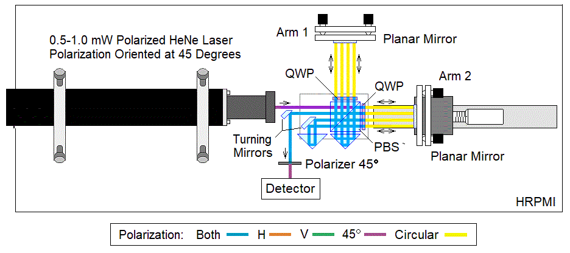
Back to Sam's Educational Michelson Homodyne Interferometer Project Manual
Table of Contents.
Displacement Measurement
One of the most important and wide spread application of
interferometry is for precision measurement and positioning. By
keeping track of the fringes rather than just observing them, a change
in position (called displacement) can be computed down to
sub-nanometer resolution. With clever modifications to the Michelson
interferometer, angle, straightness, squareness, and others can also
be computed. Semiconductor Fabs for every microchip in the Universe
utilize "steppers" (a fancy term for multi-axis
stages) which position the wafers for exposure are
controlled using laser interferometers.
The output from an interferometer using a single frequency
or two frequency laser may be processed to yield displacement
information in digital form.
In their simplest form, the measurement electronics for a homodyne
system is just a quadrature decoder circuit driving an
up-down counter; for the heterodyne system it is a pair
of accumulators and a subtractor. The interferometer optics
are identical. In practice, the electronics is considerably
more complex, in part to provide sub-wavelength interpolation and extend
the range down to nm resolution. And yes, kits are available for these
as well.
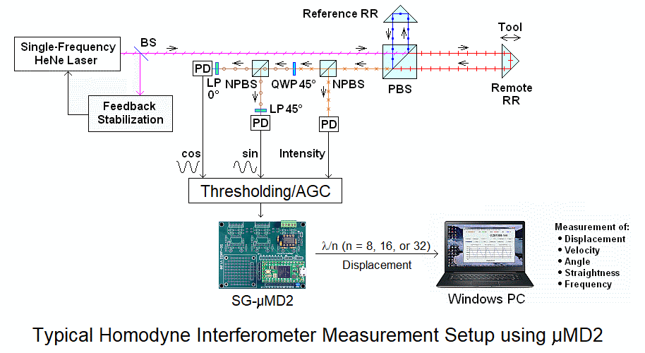
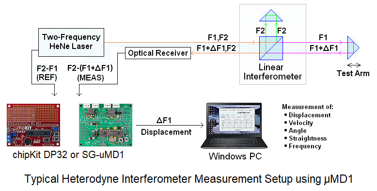
However, a basic implementation of a homodyne interferometer
displacement measurement system for demonstration purposes
can be done with a $3 microprocessor board and a few inexpensive
parts as shown below. Where the path length difference is
limited to be less than a few cm, a
multi-longitudinal mode (not strictly single frequency) laser like the
one in these kits may be used.
The basic detector using a single photodiode can generate a
signal corresponding to light and dark fringes, but cannot provide direction
information, essential for using an interferometer in metrology applications.
The Quad-Sin-Cos decoder provides a pair of outputs that are 90 degrees offset
from each-other in position, similar to the outputs of a rotary or linear
encoder:


This show a rotary optical encoder which uses a pair of LEDs and
photodiodes physically offset by 90 degrees to generate Quad-Sin-Cos analog
signals which are then thresholded to yield Quad-A-B digital signals.
The specific type of sequence is called a "Gray" code (not based on color
but attibutable to someone named Frank Gray) and has the property that any
possible allowable change in value is a change in only a single bit.
This eliminates the ambiguity with sensors using the normal binary order
where two bits can change at not quite the same time.
(The animated encoder graphic seems to be all over the Web. If anyone knows
who the original copyright holder is, I will acknowledge them.)
Many other types of encoders produce similar signals. They may use
optical, mechanical, or magnetic sensing, among others.
An interferometer with angled paths for the two interfering beams produces
fringes similar to the pattern of an optical encoder so a quad detector
could be built with offset photodiodes. However, more commonly, the
90 degree phase shift is done optically using a single combined beam
as shown below. If thresholded and converted to digital form, the
result would be a Quad-A-B format.
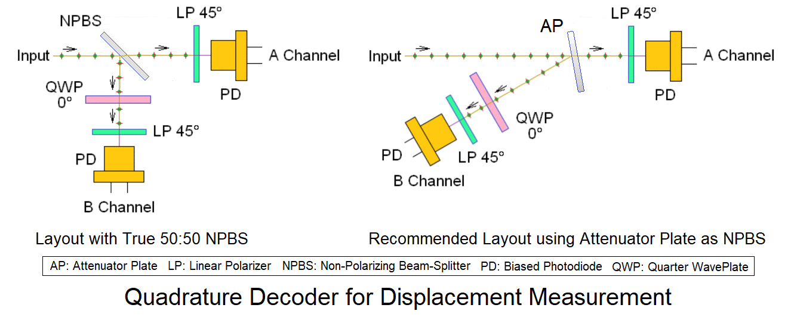
This shows variations on one
of several common implementations for a Quad-Sin-Cos decoder
that provides Sine and Cosine outputs for use in a displacement measuring
system. This is among the simplest. In most instances, the photodiodes
would be reverse biased to provide a linear response. It may be possible to
get away without that for initial testing but it will probably be needed if
doing anything useful with the outputs. In addition, a third "Intensity"
channel is almost always included to accommodate variations in detected power
due to the laser aging, changes in alignment, and contamination over time. The
Intensity channel can be implemented electronically or optically with a
non-polarizing beam-splitter at the input and additional photodiode.
The output signals from these will be close to sinusoidal with a relative
phase close to plus or minus 90 degrees depending on the.
direction of motion of the remote reflector or ring laser gyro.
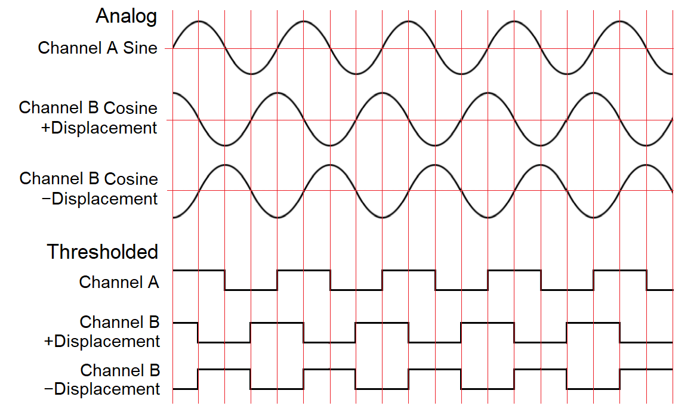
The purpose of the angled arrangement is to minimize the difference between
the amplitudes of the two polarizations. Otherwise, with 45 degrees being
close to the Brewster angle (around 57 degrees), one will be much larger
than the other. Even so-called 50:50 beam-splitters may be subject to this,
so using the angled arrangement for either one may be beneficial. The
parts for the version using the Attenuator Plate (AP)
are what are in the kit, which simplifies
construction. Using the AP also permits the relative amplitudes of the
Channel A and B signals to be changed somewhat without electronic adjustments.
Some resourcefulness will be required to mount the parts in this kit to
put together a Quad-Sin-Cos decoder. A variable attenuator plate is
included that may be used as the NPBS. Pieces of CP will be satisfactory
for both the combination of the LP+QWP (since that's exactly what the
CP is), as well as the LP (flipped) since the output polarization doesn't
affect PD behavior. See the information on polarization, below.
This would be a great excuse to finally make good use of
that 3-D printer sitting idle. ;-) A simple
frame could be designed to mount the AP via its spring and screw so its
position, and thus reflection and transmission,
would be adjustable in the beam. Slots and/or faces
would be used to attach the pieces of CP and the PDs. Be creative!
This is probably overkill though.
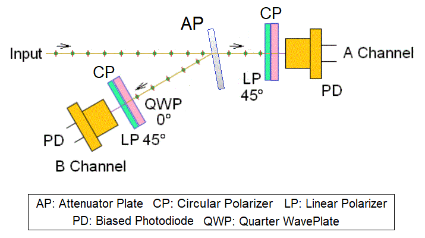
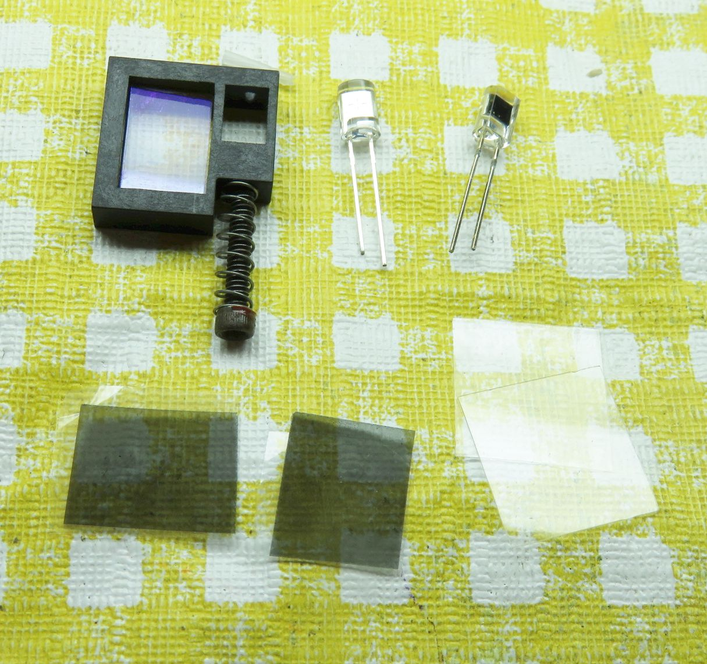
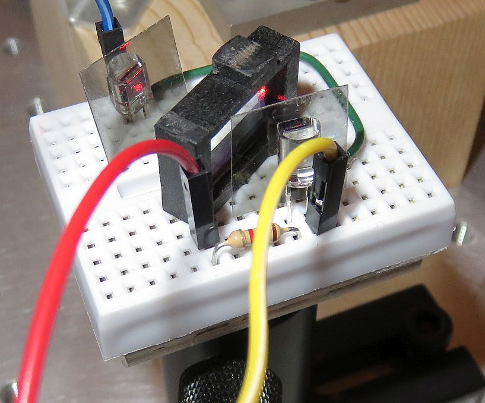
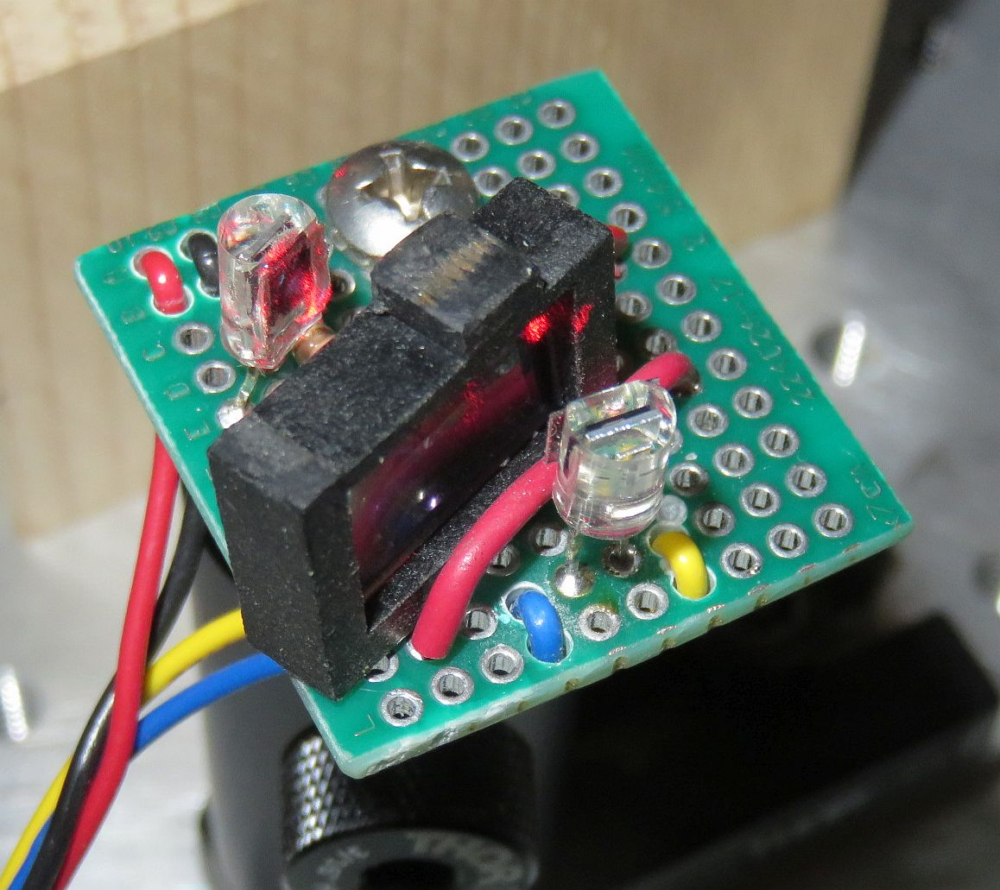
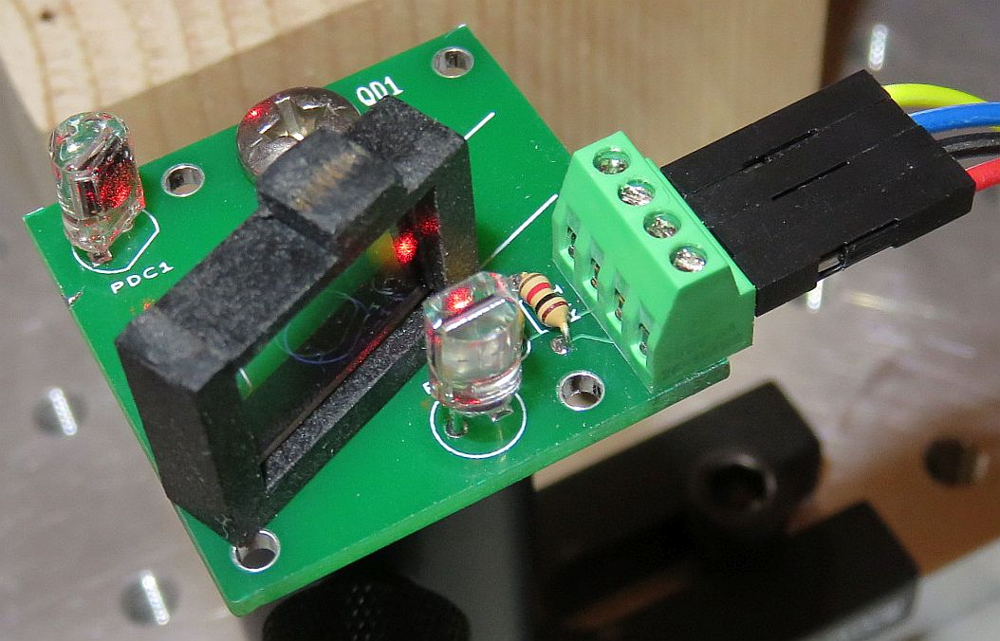
Quadrature Detector using Variable Attenuator Plate and Circular
Polarizer Sheets. Optical Layout, Parts), Constructed on Solderless
Breadboard, Protoboard, and PCB Assembly
These photos show a diagram for the preferred implementation of the
Quad decoder itself, the typical parts, and 3 perfectly workable
construction options, the first of which uses a
small solderless breadboard and doesn't require any soldering. For that one,
the AP and pieces of CP sheet could be glued to wires that would be stuck in
holes. Or U-shaped pieces of wire could simply be stuck in holes to keep
the CPs and AP in place. ;-)
Before constructing the prototype or PCB versions, it was dedirable to
to conclusively prove that the simple Type 3 scheme with CPs for the
polarization optics actually worked as advertised, so
a prototype version was installed on the Michelson Interferometer test-bed:
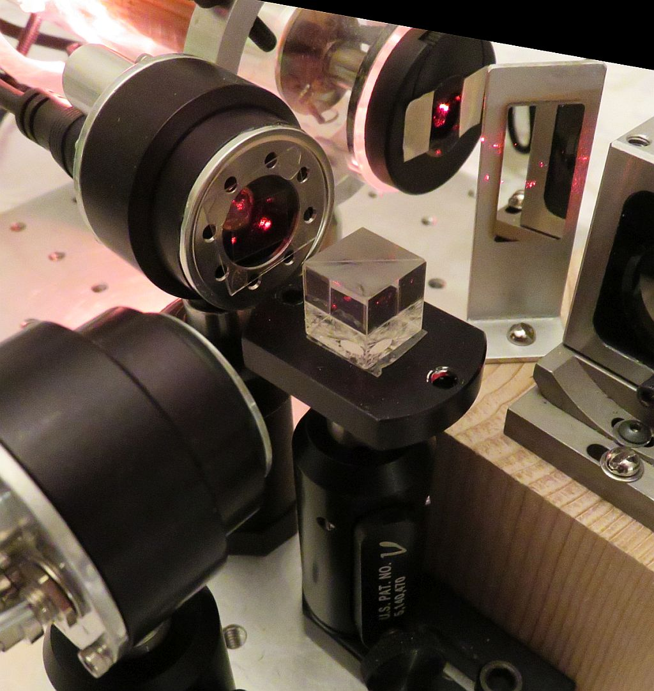
In the interest of expediency, it cheats and used an NPBS rather than a
plate beam-splitter or variable attenuator, two Thorlabs DET110s rather
than bare photodiodes, but the QWP+LP for Channel B
is a piece of CP (as in the diagram on the right, above) stuck to
a microscope cover slip that is glued to a platter clamping ring
from an ancient defunct harddrive. Got that? :)
The ugly scope screen shots below were taken using this setup:
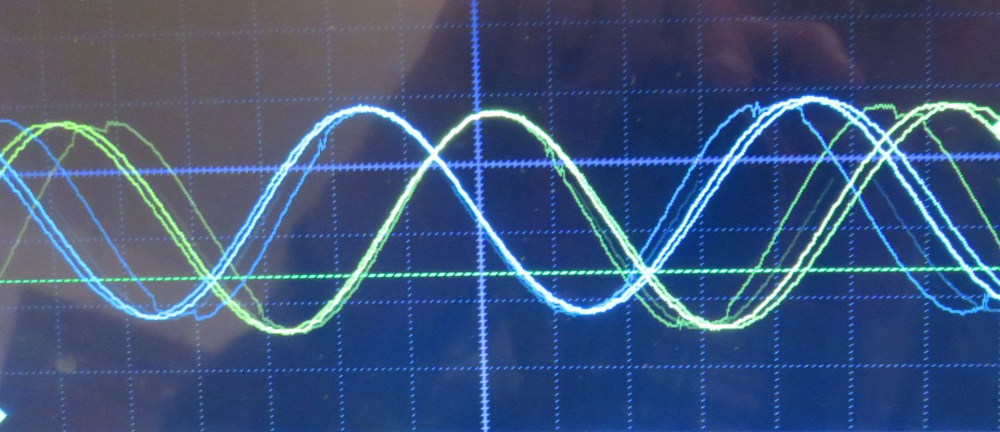
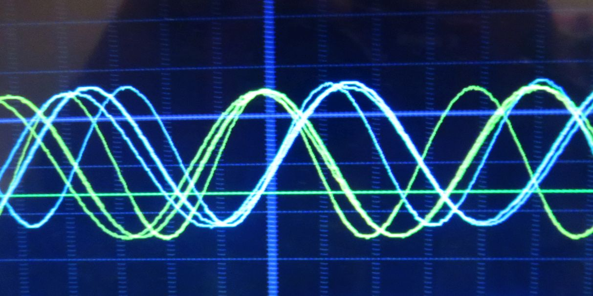
Displacement Positive (Left) and Negative (Right)
Capturing a decent photo while twiddling the micrometer screw is quite
challenging. ;-) But the conclusions are clear: This simple Quad decoder
does its job well with a phase shift of ±90 degrees. If the Arm 2
mirror or retro-reflector were on an electronically controlled positioner
like a loudspeaker voice coil or linear motor driven with a ramp, the waveforms
would be textbook quality. ;-) But with only a small stretch of the
imagination, it can be seen that the screenshots agree with the expected
behavior based on the diagrams, above.
The prototype on a prototyping board was then constructed and tested to
confirm similar behavior, and then the simple PCB was made so that mounting
of the photodiodes and other electrical components would be simplified. There
is nothing to really secure the AP/BS but that could be done with
double-sided tape.
Constructing the Quad-Sin-Cos Detector
The mounting scheme doesn't need to be fancy or pretty but should hold the
pieces securely while maintaining alignment. This can use bits of tape and
Epoxy or other adhesive. The CPs, QWPs, and NPBS plate are expendible so
feel free to chop them up if necessary for them to fit. :)
The photos above show various possibilities not involving a 3-D printer :),
including a simple PCB (which is available), but some soldering is required
for that. The simplest approach is to use the same Solderless Breadboard (SB)
as the Single Channel Detector, attached to the post using the Detector
Adapter Plate as in this closeup:
- Set up the HeNe laser so that there is a linearly polarized beam.
Orient the polarization to be at 45 degrees or preferably, the
output of the interferometer as well.
- Mount the AP at an angle as close to normal to the incident beam
as is convenient to still be able to locate the Channel B CP and PD
in the reflected beam. The rational for this is to minimize the
effect of the angled plate on the polarization of the reflected and
transmitted beams. Why? If you're into fancy 3-D-printed mounts,
it can be arranged to use the screw/spring
combination to adjust it's position, and thus attenuation (or
transmission and reflection). But that certainly is not required and
the screw and spring can be relegated to your junk drawer. ;-)
- Mount one PD to intercept the transmitted beam. (This will be
designated Channel A or 1.)
Trim the leads if necessary so that in conjunction with adjusting the
height of the platform, the beam can be approximately centered
vertically in the AP.
- Adjust the position of the AP
so that the transmitted and reflected beam intensities are
approximately equal. This will be near or at the higher-density end
of the AP. Perfect balance may not be possible since the maximum
reflectance of the AP is not 50 percent, so the remaining
adjustment will need to be done with the Gain trim-pots (substituting
for the fixed resistors, or later when the interface circuit is built).
- Install the second PD (Channel B or 2)
to intercept the reflected beam. Note that
the AP glass is slightly tilted so it may be necessary to trim the PD's
leads or bend them over so its height will be correct.
- The PDs should be reverse biased with
5 to 15 VDC (+ to cathode, the right leg facing front).
A load resistor of approximately 100K ohms
should result in a decent signal amplitude for a ~1 mW laser. If too high
or too low using only the laser, no need to change until using the actual
interferometer output. To accomodate lower power lasers and/or losses
in the interferometer optics, 1M ohm trim-pots are included in the kits for
this purpose. The typical wiring is shown below.
R-Protect PD1 Yellow
+-----/\/\----+--|<|---<<-----------------------+----------o Scope Channel 1
| | |
| | PD2 Blue |
| +--|<|---<<---------------------------+------o Scope Channel 2
| | |
| / /
| R-Load1 \ \ R-Load2
| / /
| DC Power \ \
| Red +| |- Black | |
+-----------------------<<---------||||---------+---+-------o Scope Ground
| |
|<--- SBB or QDx PCB --->|<----- Scope / Power Wiring ------>
PD Pins: Facing Front of PD with Legs Down: Anode on left, Cathode on right.
R-Protect: 250-1K ohms typical. R-Load: 10K-1M ohms typical.
In the photo, above, one piece of CP sheet is stuck directly to the channel 1.
PD. The other piece of CP sheet is simply propped in front of the channel 2
PD with the sticky side facing out. Long term, that side should be protected
with some 5 Minute Epoxy or a microscope cover slip.
The AP is just sitting on the SB. Dabs of 5 Minute Epoxy, wire loops,
or other means can be used to secure them more permanently. If using wire
loops, take care not to short out anything that shouldn't be connected. ;)
The following must be done using the output of the interferometer that has
been properly aligned so that interference can be seen on a white screen
if a linear polarizer is placed in the output beam at 45 degrees.
Make sure you hands are clean or use a pair of latex surgical gloves when
handling the pieces of CP.
- Cut a pair of 0.5x0.5cm or larger pieces of the CP sheet aligned with the
original edges.
- Carefully remove the protective film from both sides of the cut pieces.
One side is simply bare plastic; the other side has a sticky adhesive.
- The adhesive-side of the CP is the QWP with its optical axis at 0/90
degrees (aligned) with the edges; the other side is the LP with its
axis at 45 degrees. This can be confirmed by testing with a
linearly polarized laser or a
random polarized laser with a separate linear polarizer in front of it:
- When the CP's LP-side faces the laser, rotating it will result in
the transmitted intensity going very close to 0.
- With the CP-side facing the laser, there will be little or no change
in intensity.
- Channel A: Attach the adhesive side of one of the pieces of CP
directly to the front of the Channel A PD making sure to keep it aligned
with the horizontal and vertical axes. This will result in its LP-side
facing the AP oriented so the polarization axis is at 45 degrees
(edges aligned with the X and Y axes). The result should be a
strong signal as the micrometer stage is moved or whatever is
convenient to change the PLD.
- Channel B: Attach the other piece of CP in the reflected beam
so that its QWP-side faces the AP and is oriented at 0/90 degrees (edges
also aligned with the X and Y axes). This is best done by using a drop
of 5 Minute Epoxy to stick it directly to the Channel B PD, but if large
enough, it can just be placed in front of the PD with a wire loop or
something similar to stabilize it. Just make sure that the wire loop
doesn't short out something important. ;)
The result should be a strong signal as the micrometer stage
is moved or whatever is convenient to change the PLD. Once correct
behavior is confirmed, coat the adhesive-side with a thin layer
of 5 Minute Epoxy to prevent it from attracting contamination like
dirt and dust, or stick it to a microscope cover slip.
- Fine tune interferometer alignment to maximize signal amplitude
and adjust the values of the PD load resistors so that the signal amplitudes
are between 3 and 5 V p-p.
- Observe the Channel A and B signals on the oscillscope. They should
be in quadrature (or very close). This means the phase shift between them
should flip from +90 to -90 degrees depending on the direction of motion
as in the photos, above.
Note: Even if the peak-peak amplitudes are made equal, it may not
be possible to avoid an offset on one channel. In that case, the
scope vertical position can be set to superimpose them on the screen,
and later, the Threshold trim-pots can be set appropriately.
There can be a number of reasons for this offest. What might they
be? Hint: Think polarization.
µMD0 is a very inexpensive system for precision readout of displacement
(change in position), angle, straightness, and more
in metrology applications using (homodyne) interferometry
with single frequency HeNe lasers. Where the path length difference is
limited to a few cm, it may also be used with (unstabilized)
multi-longitudinal mode HeNe lasers. µMD0 may be used with devices
like linear and rotary encoders which produce Quad-Sin-Cos or Quad-A/B signals.
For the purposes of these interferometer kits, µMD0 consists of
three parts:
- Interface from Quad-Sin-Cos analog signals to Quad-A-B digital signals,
consisting of very simple circuitry to provide gain and thresholding.
- Atmega 328 Nano 3.0 (or similar Arduino-compatible) microcomputer board,
which runs the µMD0 firmware.
- Micro Measurement Display (µMD) Graphical User Interface which
typically runs on a Windows PC or laptop.
The general organization of a typical system is shown below (though the one
implemented in this kit differs in some subtle details):

Typical Homodyne Interferometer Measurement Setup using µMD0
To convert the analog sin and cos signals to something for a low cost
microprocessor with adequate performance requires a simple interface
which provides gain and threshold adjustments. (While it has analog
inputs, their conversion rate is way too slow.)
Referring to the schematic,
the trim-pots on the left are the load resistors for the
quadrature detector. The 100K value should be satisfactory to resultin
a signal of a few volts p-p using a laser with an output power of
around 1 mW and no beam expander. (The expanded beam may slightly
exceeds the dimensions of the photodiodes so the sensitivity will be
reduced.) For a lower power laser or a laser
with a beam expander, larger values may be required. Or for finer control,
fixed resistors can be added in series with the trim-pots. The trim-pots
on the right adjust the comparator threshold for the Sin and Cos signals from
the Quad decoder, with the feedback resistors providing some hysteresis.
The Atmega 328P Nano 3.0 board runs firmware that is compatible with
the µMD GUI. Of course, no high tech system would be complete without
indicator lights, so LEDs are added to monitor the A and B inputs. ;-)
The minimal implementation is shown below along with a shot of the laptop
screen while twiddling the linear stage micrometer:
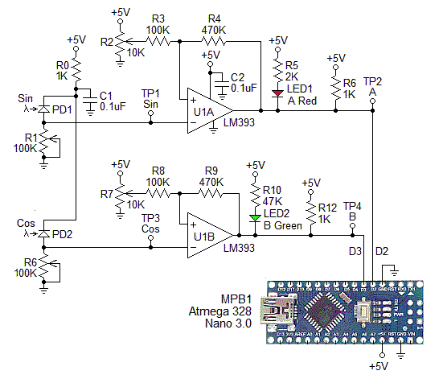

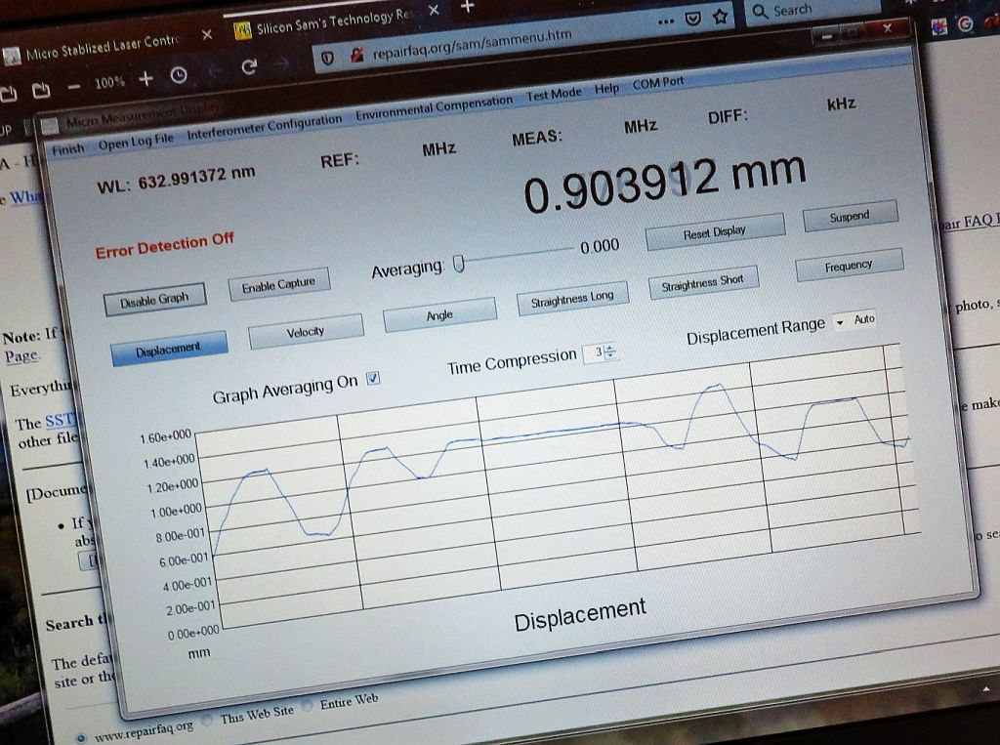
µMD0 and Interface Schematic (left), Impementation
on Solderless Breadboard (Middle), µMD GUI Display while
changing Displacemet (right)
A schematic with slightly more detail like pin numbers may be found at:
µMD0 Sin-Cos Analog and RS422
Digital Interfaces.
A simple assembled PCB for quad decoder is included. Blank PCBs are
available for the µMD0 and interface, but should not be required
for a student project. ;-)
The ptototype setup is shown below, but with the dual Thorlabs DET110 detectors
and interface without gain adjustments, sorry. ;-)
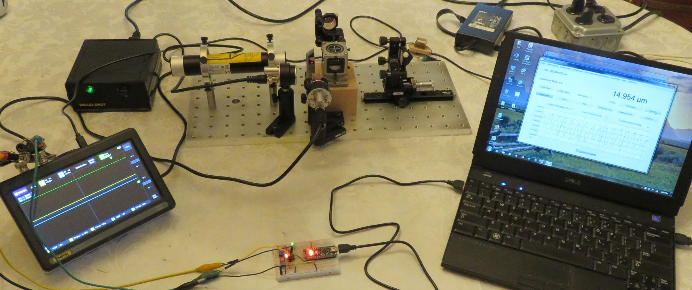
Overall Setup showing Interferometer, Scope, µMD0 with
Interface, and µMD GUI Display
The bandwidth of the photodiode + resistor combination is quite
limited, probably a few thousand counts/second, if that. But
it is sufficient to track the movement of the micrometer stage,
though not if it's pushed back and forth by hand without the
micrometer or being moved on the rail. That would require a
proper transimpedance pre-amp circuit. µMD0 has a maximum slew
rate believed to be above 125,000 counts/second, or around 1 cm/s
with the Linear Interferometer.
For more information, see the Laser FAQ chapter
Laser
Instruments and Applications, sections starting with
"Interferometers for Precision Measurement in Metrology Applications".
And the Micro Measurement Display 0
(µMD0) Installation and Operation Manual.
Back to Sam's Educational Michelson Homodyne Interferometer Project Manual
Table of Contents.
Miscellaneous
This question inevitably comes up with interferometers where visible fringes
are produced. Where does the light go that would be in the dark spaces?
In principle, with perfect alignment, a visible display could be totally
bright or totally dark. It is possible to demonstrate this here
by viewing the fringe display directly on a screen behind a linear polarizer
oriented at 45 degrees. And by rotating the LP between +45 degrees and -45
degrees, it would go between light and dark.
The analog with the signal is that it can be high
or low. But since the laser is still lasing and with no polarizer in front
of the detector, the detected signal is more or less constant. So when the
signal is low (or the spot is dark),
where is the missing power? I'll save you some of your brain
cycles and state that with the LP film, it's lost in the plastic
and actually increases its temperature a miniscule amount.
But what about a Polarizing Beam-Splitter (PBS) like the large one that is
the heart of this setup? They have negligible losses and
it would be simple in principle to use one
in place of the LP film. To do that, either the PBSC would need to be
rotated 45 degrees or the polarization of the beam would need to be
rotated 45 degrees so that the PBS can generate the two polarized outputs.
Rotating the polarization of the beam
can be done with a Half WavePlate, but there is none in the kit, believe
it or not. ;-) However,
it can be simulated using two pieces of LP film and the Attenuator Plate
(AP) as a Non-Polarizing Beam-Splitter (NPBS). This isn't quite identical
because there will still be losses in the LPs, but if oriented at ±45
degrees, the effect will be the same.
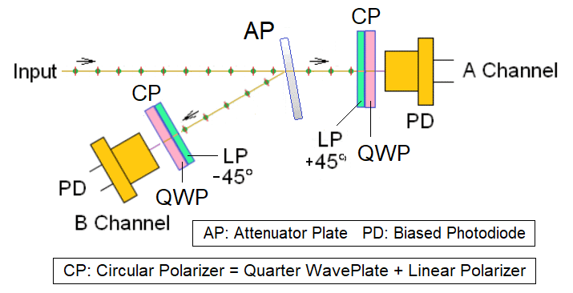
Dual Polarization Detector using LPs at ±45
Degrees
This uses the same CP as the quad decoder but for these experiments,
the QWP portion is totally irrelevant and the QWP (sticky) side goes toward
the photodiodes for both.
It should be pretty obvious what is going to happen, but seeing it is not
quite the same as theory. ;-)
Back to Sam's Educational Michelson Homodyne Interferometer Project Manual Table of Contents.
Back to Sam's Educational Michelson Homodyne Interferometer Project Manual
Table of Contents.
Future Options
Modified laser head cylinders may be available made of transparent aluminum
(a.k.a., acrylic or Plexiglas). While there isn't a huge amount of action
that would be visible, it would add a cheery glow to the setup. And at the
same time (and more importantly), a thin-film heater can be added to the
laser tube to control cavity length. The photo on the left is a closeup
of the laser while the one on the right is the rail setup with
Thermal Expandsion experiment using the glowing laser.
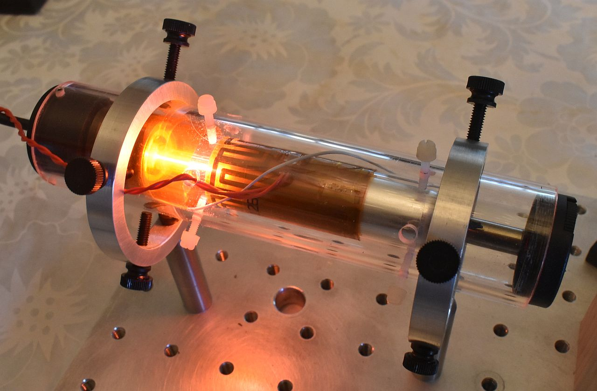
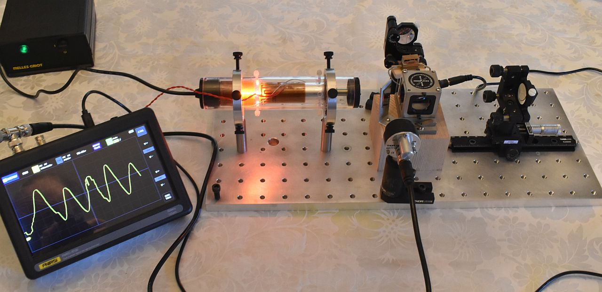
HeNe Laser Tube in Transparent Acrylic Cylinder with Heater
(left), Scope Display of Fringe Signal while Heating Glass Block in
Arm 1 (right)
Something like this would be used to house the single frequency or two
frequency lasers described above. The heater would also be useful to
accelerate mode sweep for experiments dealing with the interferometer
response particularly for random polarized lasers.
Information
There are two basic types of HeNe lasers with respect to polarization of
the output beam: Random polarized and linearly polarized. With just a
pair of mirrors and HeNe gas, the result will usually random polarized.
To construct a linearly polarized HeNe laser, a Brewster-angle plate is
added inside the laser cavity. (Search for: "Brewster Angle".)
This introduces an orientation dependent loss with respect to polarization
and virtually 100 percent of the photons will then be linearly polarized
with the orientation with minimal loss. The Brewster plate on the types
of HeNe laser tubes used here are buried within one of the mirror mount
stems and are thus not readily visible.
Although the experiments are
described with a linear polarized HeNe laser, it is possible to
use a random polarized laser instead if one is more readily available.
However, its output will need to be converted to linear polarization
in a very specific way with a linear polarizer to behave the same.
But a random polarized laser can also demonstrate some interesting
interferometer behavior not available with a linear polarized laser.
Most random polarized lasers do not actually have polarization varying, well,
at random. :) The term "random polarized" with respect to to HeNe
laser simply means that nothing special is done to control the
polarization. (I.e., no Brewster plate.)
In the case of many red (633 nm) HeNe lasers, that means:
- There are two polarization axes instead of one.
- They are orthogonal to each-other.
- Their orientation cannot be predicted without testing
but remains fixed for the life of the tube.
- Adjacent longitudinal modes have orthogonal polarization.
And note that this only applies to red HeNes, not even other color HeNes,
let alone most other lasers. Murphy must have taken a day off when the
HeNe laser was invented because these attributes end up being quite
useful - in fact fundamentally important - for many applications.
A laser tube with these characteristics would be considered "well behaved".
if the longitudinal modes move smoothly through the neon gain curve
without abrupt changes in amplitude and not all are like this. :( :)
A "flipper" will have
"polarization switching" whereby at some point or points during mode
sweep, the two sets of longitudinal modes will swap their polarization
axes, usually instantly.
For some truly nasty tubes, this will happen continuously, somewhat
well, at random. Flippers are often not suitable for an interferometer
because in the region of the flip, there may be excessive optical noise,
possibly due to even the smallest amount of back-reflection,
which will show up as large oscillations in the fringe signal.
(While that in itself may be interesting, it will also be confusing.)
The simplest way to test for a well behaved random polarized laser is to
put the output through a linear polarizer and monitor it on a graphing
laser power meter or photodiode and data acquisition system. Adjust
the orientation of the polarizer for the maximum amplitude of the mode
sweep variation. That aligns it with one of the polarization axes.
Then inspect the plot over a couple minutes (from a cold start to
get the fastest mode sweep) for abrup changes in amplitude. There
should be none.
The following animation shows the mode sweep of a random polarized HeNe
laser similar to the JDSU 1107 or 1108. The red and blue lines represent
the amplitudes of the orthogonal polarized outputs. To actually view these
live with a similar display
requires an instrument called a Scanning Fabry-Perot Interferometer
(SFPI) with a dual polarization detector. While commercial SFPIs cost
several thousand dollars, an SFPI with these capabilities can be built
as a nice student project at modest cost. It's all done with mirrors. ;-)

Mode Sweep of Short Random Polarized HeNe Laser
A linearly polarized HeNe laser of similar length would have both modes be the
same polarization and same color. :)
The rate at which the modes pass through the neon gain curve will depend
on how fast the tube is expanding from heating of the gas discharge, so it will
slow down as it reaches thermal equilibrium from a cold start.
Plots of the two polarized modes for a well behaved tube (non-flipper) would
look something like:

Mode Amplitude Plots of Well Behaved Short Random Polarized HeNe Laser
The plots cover the time range from a cold start to close to thermal
equilibrium. Note how both the red and blue plots are continuous.
A full mode sweep cycle at the start is a few seconds
while at the end it is a few minutes. After that it would be
irregular as just ambient air moving around will have a significant
effect.
(For a linearly polarized tube with similar physical characteristics,
the amplitude of the output would be the sum of the red and blue plots.)
The plots of a typical flipper might look like the following (zoomed
in to a few mode sweep cycles to show details):
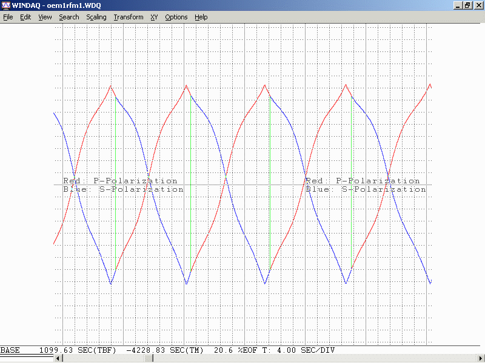
Mode Amplitude of Short Random Polarized "Flipper" HeNe Laser
(The shape of the curves differ due to the tube not being the same model.)
The vertical green line is the instant of the flip, which occurs quite close
to the same location during each mode sweep cycle.
However, experience shows that in the interferometer, there may be
nasty stuff going on around that region and it won't be confined to an
instantaneous event. The detected signal may be very noisy.
For an academic challenge, a random polarized flipper
is probably the most interesting type of tube to study.
But a good understanding of what's going on is necessary to
not to go insane attempting to decipher the behavior.
The next most interesting tube would be one that is random polarized and
well behaved. One or two of the kits put together to date
includes that type of laser. A random polarized flipper can
be provided in place of or in addition to the linear polarized
or random polarized well behaved tube if interested. :-)
Back to Sam's Educational Michelson Homodyne Interferometer Project Manual
Table of Contents.
Homodyne V2.1 Summary of Features and Options
Here is assorted information on what is for sale or will be
for sale, directly from me or through eBay. V2.1 is virtually identical
to V2.0 except for the size of some posts and spacers.
V2.0 is functionally virtually identical to V1.0 and V1.5 except for
the sizes of the breadboards, but a few other parts have changed,
and thus the assembly procedures differ.
There are three versions of the V2.1 Homodyne setups, though customization
is possible.
- The Basic version uses a 6x18" breadboard and will be able to do the
linear interferometer using cube corners, the pressure and temperature
sensors, and displacement measurement using uMD0. The smaller width
breadboard compared to V1.0 and V1.5 only affects the mounting of the
Arm 1 post holder.
- The Deluxe version also uses a 6x18" breadboard and in addition to
everything in the Basic version, it will be able to do
the interferometers using planar mirrors, actuators using
planar mirrors, and more on laser coherence and effect of mode sweep.
- The Deluxe+ version uses an 8x24" breadboard to facilite more
experiments on coherence length and mode sweeep, as well as being
able to add other optics in Arm 2.
The Basic version really has enough for an introduction to interferometry
and can be upgraded to the Deluxe version by adding the appropriate parts
from me or elsewhere.
Other changes compared to V1.0 and V1.5 include:
- V2.1 (and V2.0) use an aluminum plate on Thorlab posts rather than a wood
block for the PBS and turning mirror mount as in V1.0 and V1.5. Both are
very stable, but the plate affair is more in keeping with optical setups
and doesn't contribute to the demise of trees. ;-) The wood block also
had issues of degradation with multiple cycles of assembly and disassembly.
- A custom detector made from discrete parts replaces the Thorlabs DET110
in V1.0 and V1.5. The performance for the purposes of these kits is
identical. And it facilitates adding a second channel for the quad-sin-cos
decoder or X/Y detector and also simplifies the wiring with a terminal block
and/or jumper wires instead of requiring BNC cables and clip leads. Both a
solderless breadboard and assembled PCB version will be included.
However, for the die-hard, a few DET110s are available at a lower cost than
the current version of a biased photodiode from Thorlabs.
- The adjustable mounts will be either Thorlabs KM100s or Newport U100s.
For the purposes of these kits, they are functionally equivalent and the
Thorlabs are smaller and sleeker. ;-) The U100s are more precise (and a
lot pricier if bought new!), though these versions lack knobs, requiring
the use of a 5/64" ball driver, which may be less convenient. But never
fear, appropriate Thorlabs knobs will be included in the kit.
- The QWPS and mounted CC in the Deluxe and Deluxe+ versions
may be custom parts rather than from HP/Agilent. They will be
functionally equivalent without issues of availability.
- A generic linear stage will be used, though a Parker 3902 may be an
option. The generic stage is equally good for positioning here, possibly
even more stable due to its wider track spacing.
- All versions will have either a Thorlabs RC carrier with RLA rail,
or MR15 rail with MGN15-C block.
Photos of each of the three versions with typical interferometers are
shown below. The first is the Basic version with the 6x18" the breadboard,
configured with Linear Interferometer and quad decoder PCB attached to the
SG-µMD0 PCB:
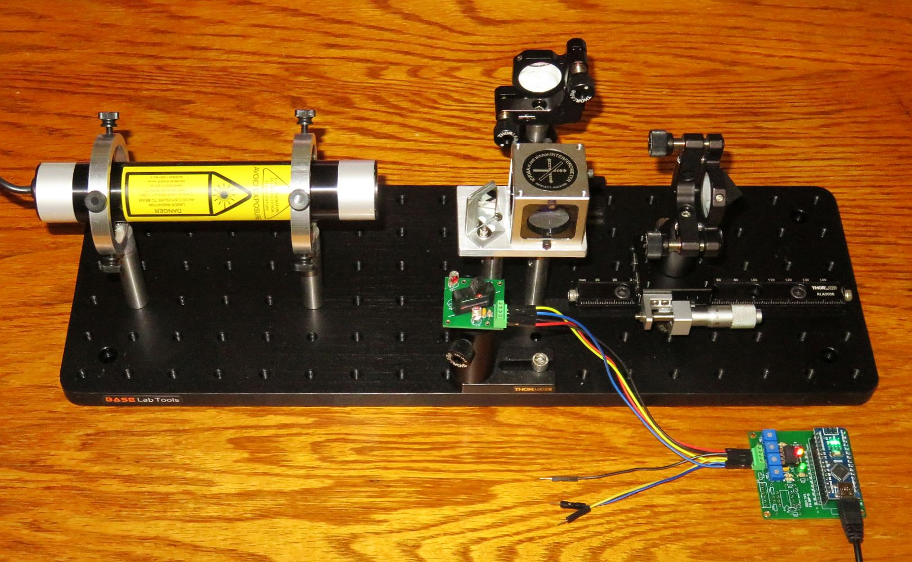
The next one is the Deluxe version configured for the High Stability
Plane Mirror Interferometer. The laser includes a beam expander but
it is otherwise configured the same way.
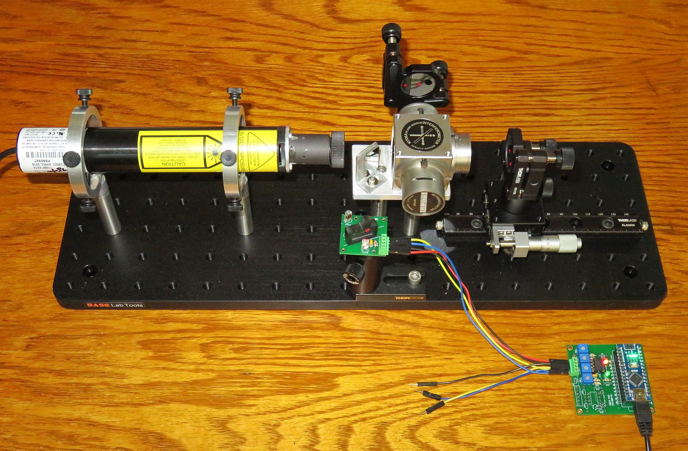
The next is the Deluxe+ "Stretch" version on the 8x24" breadboard.
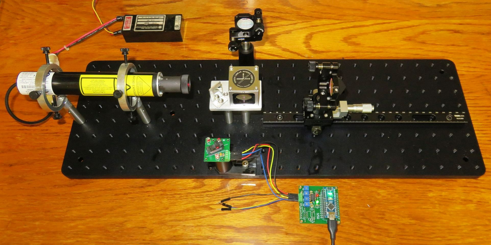
Back to Sam's Educational Michelson Homodyne Interferometer Project Manual
Table of Contents.
Sam's Educational Michelson Interferometer Interferometer Kit Parts List
These are the parts for the Basic, Deluxe, and Deluxe+
setups except as noted.
Replicating it should be straightforward
The 8x18" optical breadboard for V1.0 and V1.5 is custom with the dimensions
selected to be convenient for the projects while being able to easily ship
Worldwide. The 6x18" and 8x24" breadboards for V2.0 and V2.1 are standard.
If machining one, fewer than half the standard holes are enough based
on all reasonable mounting locations, but that's only worth it if you're
paying by the hole. ;-)
Most other standard opto-mechanical parts are from Thorlabs. The major
exceptions are the HP/Agilent PBS cube, QWPs, and mounted CCs (via eBay).
But low cost substitutes for those are in the works.
The JDSU 1107P and 1108P, or similar laser heads from Melles Griot/Pacific
Lasertec like the 05-LHR/P-211 are ideal for these experiments. The criteria
include being linearly polarized, eye-safe output power, and physical size.
Optics companies like Edmunds, Newport, and Thorlabs have suitable lasers
(though most are made by JDSU and PLT), but eBay is often a good source
at a fraction of the cost. The laser could also be a bare tube safely
enclosed, though the preferred linearly polarized variety is not that
common at the low power of 0.5 to 1 mW. Random polarized heads and tubes
can be used (and actually add some interesting areas to study) if
certain criteria are met, primarily that they are not
"flippers". See section: Linear Polarized versus
Random Polarized HeNe Laser.
Parts List for V2.1
Differences between the versions will be noted.
Quantity Description
------------------------------------------------------------------------------
Baseplate/Optical breadboard:
1x Aluminum optical breadboard 6x18" (Basic and Deluxe versions, BASE Lab
Tools SAB0618) or 8x24" (Deluxe+ version, BASE Lab Tools SAB0824).
Laser Assembly:
1x Laser consisting of 0.5-1 mW JDSU 1107/P or 1108/P laser head
and power supply with DC input brick and universal wall adapter,
which may be used Worldwide. Minimum power 0.4 mW.
A lab-style HeNe laser power supply may be an option.
1x (Random polarized lasers only): ~1x1" piece of circular polarizer.
Consists of linear polarizer (+/-45 degrees) with QWP (0/90 degrees).
Cut up as needed.
1x Beam Expander (Deluxe/Deluxe+ only) consisting of:
1x Beam Expander Adapter Plate. The front bezel of the laser has
had 3 tapped holes added for this.
1x HP/Agilent 6 mm beam expander, modified, must be glued or
press-fit into Beam Expander Adapter Plate. Resulting beam
is 3-4 mm in diameter.
3x M2.5 x 5 mm cap-head screws to secure adapter plate.
2x Laser Mounts each consisting of:
1x Small Ring Mount with two 8-32 x 1.5" and two 8-32 x 1" thumbscrews.
1x Thorlabs TR3 post with 8-32 x 1/2" cap-head screw to secure the ring
mounts and optional #8 plastic washer to provide compliance if the
mounting hole in the rings is threaded (some are) so the orientation
can be set correctly. In the latter case, an 8-32 x 1/2" setscrew
can substitute for the cap-head screw so as not to impinge on the
available space within the rings for the laser head.
Custom Single Channel Detector and Quadrature Decoder:
1x Variable attenuator plate to be used as NPBS.
2x 1/2" piece of sheet (may be used as CP or LP), or CP+LP, cut to size.
2x Silicon photodiodes + spare.
1x 1K ohm resistor (PD protection).
2X Load resistors, 100K to 1M typical, or 1M trim-pot
1x Set of jumper wires, etc.
1x Solderless breadboard with adhesive back, 170 tie points.
1x Detector adapter plate with 8-32 or 1/4-20 1/2" setscrew.
1x QD1 PCB (option) with 8-32 1/2" cap-head screw and 1/4" x 1/4" #8
spacer.
2x 4 pole screw terminal block.
1x 1K ohm resistor.
1x 0.1 µF capacitor.
2x Photodiode.
2x 2 pin male to female socket strip.
AB2 quadrature decoder parts kit.
Custom Single Channel Detector and Quadrature Decoder:
1x Variable attenuator plate to be used as NPBS.
2x 1/2" piece of sheet (may be used as CP or LP), or CP+LP, cut to size.
2x Silicon photodiodes + spare.
1x 1K ohm resistor (PD protection).
2X Load resistors, 100K to 1M typical, or 1M trim-pot
1x Set of jumper wires, etc.
1x Solderless breadboard with adhesive back, 170 tie points.
1x Detector adapter plate with 8-32 or 1/4-20 1/2" setscrew.
1x QD1 PCB (option) with 8-32 1/2" cap-head screw and 1/4" x 1/4" #8
spacer.
2x 4 pole screw terminal block.
1x 1K ohm resistor.
1x 0.1 µF capacitor.
2x Photodiode.
2x 2 pin male to female socket strip.
Common to both detectors:
1x Thorlabs PH2 post holder.
1x Thorlabs TR2 post.
1x BA1 or BA1S with 1/4-20 3/8" cap-head screw to attach to PH2 and
1/4-20 5/8" cap-head setscrew to attach to base.
Micro Measurement Display 0 (µMD0):
1x Atmega 328 Nano 3.0 microcomputer board with pins soldered.
1x Homodyne firmware for Nano (may be preloaded or download from
µMD0 Manual).
1x µMD Graphics User Interface (download from
µMD0 Manual).
1x Solderless breadboard 3-1/4" x 2-1/4", 25 columns, 400 tie points.
1x LM393P dual voltage comparator.
1x 3 mm Red LED and 1-2K ohm resistor.
1x 3 mm green LED and 27-47K ohm resistor.
2x 100K to 1M ohm resistors or trim-pots.
2x 10K ohm trim-pots.
2x 100K ohm resistor.
2x 470K ohm resistors.
1x SG-µMD0 PCB (option).
1x 30 pin Socket for Nano (may need trimming).
2x 8 pin sockets for LM393 and UA9637.
1x 3 mm blue LED.
1x 10K ohm resistor.
Support (Deluxe and Deluxe+):
1x 10K ohm potentiometer wired with 10K ohm current limiting resistor.
- Hookup wire and jumper wires.
Back to Sam's Educational Michelson Homodyne
Interferometer Project Manual Table of Contents.
-- end V2.04 --